各类网站采用了各种各样的措施反爬虫,其中一个便是验证码。随着技术的发展,验证码的花样越来越多,由最初只是几个数字组合而成的简单图形,发展到加入了英文字母和混淆曲线,还有一些网站使用中文字符验证码,这无疑使识别变得愈发困难。
12306 验证码的出现使行为验证码开始发展,相信用过12306的用户多少都为它的验证码头疼过,需要识别文字,然后点击与文字描述相符的图片,只有所点的图片完全正确,才能通过验证。随着技术的发展,这种交互式验证码越来越多,如滑动验证码需要将滑块拖动到指定位置才能完成验证,点选验证码需要点击正确的图形或文字才能通过验证。
验证码变复杂的同时,爬虫的工作也变得越发艰难,有时候必须通过验证才可以访问页面。
本章统一讲解验证码的识别问题,涉及的验证码有图形验证码、滑动验证码、点选验证码和手机验证码等,这些验证码的识别方式和思路各有不同,有的直接使用图像处理库就能完成,有的则需要借助深度学习技术完成,还有的要借助一些工具和平台完成。虽说技术各有不同,但了解这些验证码的识别方式之后,我们就可以举一反三,使用类似的方法识别其他类型的验证码。
8.1 使用 OCR 技术识别图形验证码
首先来看最简单的一种验证码——图形验证码,这种验证码最早出现,现在也依然很常见,一般由4位左右的字母或者数字组成。
例如在案例网站 https://captcha7.scrape.center/就可以看到类似的验证码,如图8-1所示。这类验证码整体比较规整,没有过多的干扰线和干扰点,文字也没有大幅度的变形和旋转。对于这类验证码,可以使用OCR技术识别。
1. OCR 技术
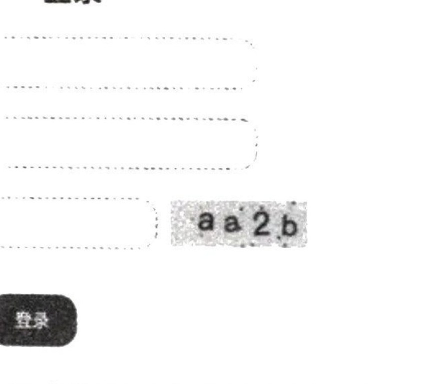
OCR,即 Optical Character Recognition,中文叫作光学字符识别,是指使用电子设备(例如扫描仪或数码相机)检查打印在纸上的字符,通过检查暗、亮的模式确定字符形状,然后使用字符识别方法将形状转换成计算机文字。现在 OCR 已经广泛应用于生产生活中,如文档识别、证件识别、字幕识别、文档检索等。当然,用来识别本节所述的图形验证码也没有问题。
本节中我们会以当前案例网站的验证码为例,讲解利用 OCR识别图形验证码的流程,实现输入验证码的图片,输出识别结果。
2. 准备工作
在本节的学习过程中需要导入 tesserocr库,这个库的安装相对来说没有那么简单,可以参考
https://setup.scrape.center/tesserocr另外，还需要安装 Selenium、Pillow、NumPy 和 retrying 库，用来模拟登录、处理图像和重试操作。可以使用 pip3 工具安装这些库：
pip3 install selenium pillow numpy retrying如果安装过程中遇到了问题，可以参考如下链接。
Selenium:https://setup.scrape.center/selenium
Pillow:https://setup.scrape.center/pillow
NumPy:https://setup.scrape.center/numpy
retrying: https://setup.scrape.center/retrying安装好这些库之后，就可以开始学习了。
3. 保存验证码图片
为了便于操作，先将验证码的图片保存到本地。在浏览器中打开案例网站，然后右击验证码图片，将其保存为 captcha.png 文件即可，示例如图 8-2 所示。
4. 识别测试
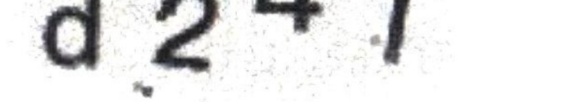
现在新建一个项目，将验证码图片放到项目的根目录下，然后利用 tesserocr 库识别该验证码，代码如下：
import tesserocr
from PIL import Imageimage = Image.open('captcha.png')
result = tesserocr.image_to_text(image)
print(result)这里先新建了一个图片对象，然后调用 tesserocr 里的 image_to_text 方法将图片转换为了文本。实现过程非常简单，运行结果如下：d241 tesserocr 还提供了一个更加方便的方法，可以直接将图片文件转化为字符串，代码如下：
import tesserocr
print(tesserocr.file_to_text('captcha.png'))输出结果同样是 d241。可以看到，通过 OCR 技术便能成功识别图形验证码的内容。
5. 处理验证码
换一个验证码，将其保存为 captcha2.png 文件，如图 8-3 所示。重新执行下面的代码做测试：
import tesserocr
from PIL import Imageimage = Image.open('captcha2.png')
result = tesserocr.image_to_text(image)
print(result)输出结果如下：-b32d
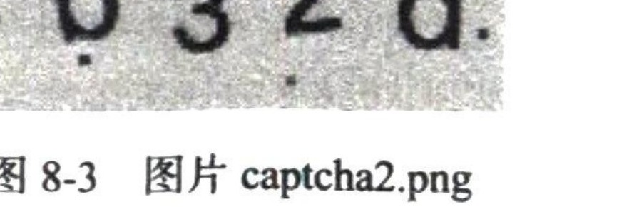
这次的识别结果和实际结果有偏差,多了一个“-”,这是因为图片里多余的点对识别造成了干扰。对于这种情况,需要做一些额外的处理,把干扰信息去掉。仔细观察可以发现,图片里那些造成干扰的点,其颜色大多比文本的颜色更浅,因此可以通过颜色将造成干扰的点排除掉。首先将保存的验证码图片转化为数组,看一下维度:
import tesserocr
from PIL import Image
import numpy as np
image = Image.open('captcha2.png')
print(np.array(image).shape)
print(image.mode)运行结果如下:
(38, 112, 4)
RGBA从结果可以看出,这个图片其实是一个三维数组,38和112代表图片的高和宽,4则是每个像素点的表示向量。为什么是4呢?因为最后一维是一个长度为4的数组,分别代表R(红色)、G(绿色)、B(蓝色)、A(透明度),即一个像素点由4个数字表示。那为什么是R、G、B、A,而不是R、G、B或其他呢?因为 image.mode 是 RGBA,即有透明通道的真彩色,运行结果的第二行也可以印证这一点。mode 属性定义了图片的类型和像素的位宽,一共有9种类型。
1:像素用1位表示,Python中表示为True 或False,即二值化。
L:像素用8位表示,取值0~255,表示灰度图像,数字越小,颜色越黑。
P:像素用8位表示,即调色板数据。
RGB:像素用3×8位表示,即真彩色。
RGBA:像素用4×8位表示,即有透明通道的真彩色。
CMYK:像素用4×8位表示,即印刷四色模式。
YCbCr:像素用3×8位表示,即彩色视频格式。
I:像素用32位整型表示。
F:像素用32位浮点型表示。为了方便处理,可以把RGBA转为更简单的L,即把图片转化为灰度图像。往图片对象的 convert方法中传入L即可,代码如下所示:
image = image.convert('L')
image.show()也可以往 convert 方法中传入1,即把图片二值化处理,代码如下所示:
image = image.convert('1')
image.show()我们选择把图片转化为灰度图像,然后根据阈值删除图片中的干扰点,代码如下:
from PIL import Image
import numpy as np
image = Image.open('captcha2.png')
image = image.convert('L')
threshold = 50
array = np.array(image)
array = np.where(array > threshold, 255, 0)
image = Image.fromarray(array.astype('uint8'))
image.show()这里先将变量 threshold 赋值为50,它代表灰度的阈值。接着将图片转化为1
NumPy 的 where 方法对数组进行筛选和处理,其中指定将灰度大于阈值的图片的像素设置为 255,表示白色,否则设置为0,表示黑色。最后看一下处理完的图片长什么样,如图8-4所示。可以看到原来图片中的干扰点已经不见了,整个图片变得黑白分明。此时重新识别验证码,代码如下:
import tesserocr
from PIL import Image
import numpy as np
image = Image.open('captcha2.png')
image = image.convert('L')
threshold = 50
array = np.array(image)
array = np.where(array > threshold, 255, 0)
image = Image.fromarray(array.astype('uint8'))
print(tesserocr.image_to_text(image))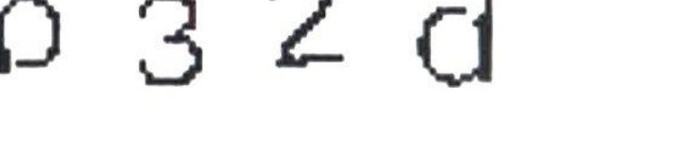
运行结果如下:b32d这次的结果是正确的。所以,针对一些有干扰的图片,可以做去噪处理,这能提高验证码识别的正确率。
6. 识别实战
现在,我们可以尝试使用自动化的方式识别案例中的验证码,这里使用 Selenium 完成这个操作,代码如下:
import time
import re
import tesserocr
from selenium import webdriver
from io import BytesIO
from PIL import Image
from retrying import retry
from selenium.webdriver.support.wait import WebDriverWait
from selenium.webdriver.support import expected_conditions as EC
from selenium.webdriver.common.by import By
from selenium.common.exceptions import TimeoutException
import numpy as np
def preprocess(image):
image = image.convert('L')
array = np.array(image)
array = np.where(array > 50, 255, 0)
image = Image.fromarray(array.astype('uint8'))
return image
@retry(stop_max_attempt_number=10, retry_on_result=lambda x: x is False)
def login():
browser.get('https://captcha7.scrape.center/')
browser.find_element_by_css_selector('.username input[type="text"]').send_keys('admin')
browser.find_element_by_css_selector('.password input[type="password"]').send_keys('admin')
captcha = browser.find_element_by_css_selector('#captcha')
image = Image.open(BytesIO(captcha.screenshot_as_png))
image = preprocess(image)
captcha = tesserocr.image_to_text(image)
captcha = re.sub('[^A-Za-z0-9]', '', captcha)
browser.find_element_by_css_selector('.captcha input[type="text"]').send_keys(captcha)
browser.find_element_by_css_selector('.login').click()try:
WebDriverWait(browser, 10).until(EC.presence_of_element_located((By.XPATH, '//h2[contains(.,"登录成功")]')))
time.sleep(10)
browser.close()
return True
except TimeoutException:
return False
ifname：==main':
browser = webdriver.Chrome()
login()我们首先定义了一个 preprocess方法,用于对验证码图片做去噪处理,逻辑和前面是一样的。接着定义了一个login方法,其执行逻辑是:(1)打开案例网站;(2)找到用户名输入框,输入用户名;(3)找到密码输入框,输入密码;(4) 找到并截取验证码图片,转化为图片对象;(5) 预处理验证码,去除噪声;(6)识别验证码,得到识别结果;(7)去除识别结果中的一些非字母字符和数字字符;(8) 找到验证码输入框,输入验证码结果;(9)点击“登录”按钮;(10)等待“登录成功”的字样出现,如果出现就证明验证码识别正确,否则重复以上步骤重试。其中我们用到了 retrying 来指定重试条件和重试次数,以保证在识别出错的情况下能够反复重试,增加整体的成功概率。运行代码,会弹出浏览器,我们按照以上流程输入相应内容,可能重试几次,就成功登录了网站。浏览器页面如图8-5所示。
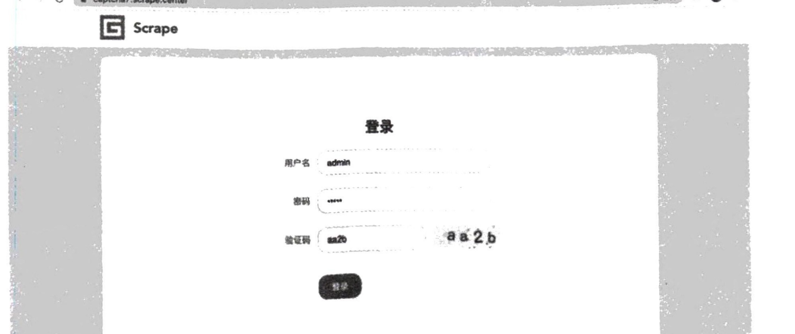
登录成功的页面如图8-6所示。
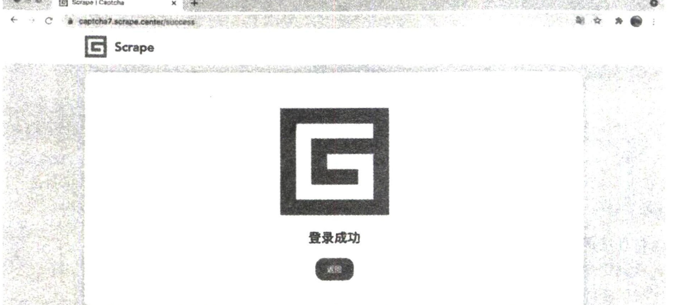
至此,我们已经能通过 OCR 技术成功识别图片验证码,并将其应用到模拟登录的实战中。
7. 总结
本节中我们了解了利用 tesserocr识别图片验证码的过程,并将其应用于实战案例,实现了模拟登录。为了提高 tesserocr 的识别正确率,可以对验证码图片做去噪预处理。但利用 tesserocr 识别验证码的正确率整体并不高,下一节我们介绍其他方案。本节代码见 https://github.com/Python3WebSpider/CrackImageCaptcha。参考资料见 https://baike.baidu.com/item/OCR。
8.2 使用 OpenCV 识别滑动验证码的缺口
随着互联网技术的发展,各种新型验证码层出不穷,最具有代表性的便是滑动验证码。本节中我们首先了解滑动验证码的验证流程,然后介绍一个简易的利用图像处理技术识别滑动验证码缺口的方法。
1. 滑动验证码
说起滑动验证码,比较有代表性的服务商有极验、网易易盾等,验证码效果如图8-7和图8-8所示。
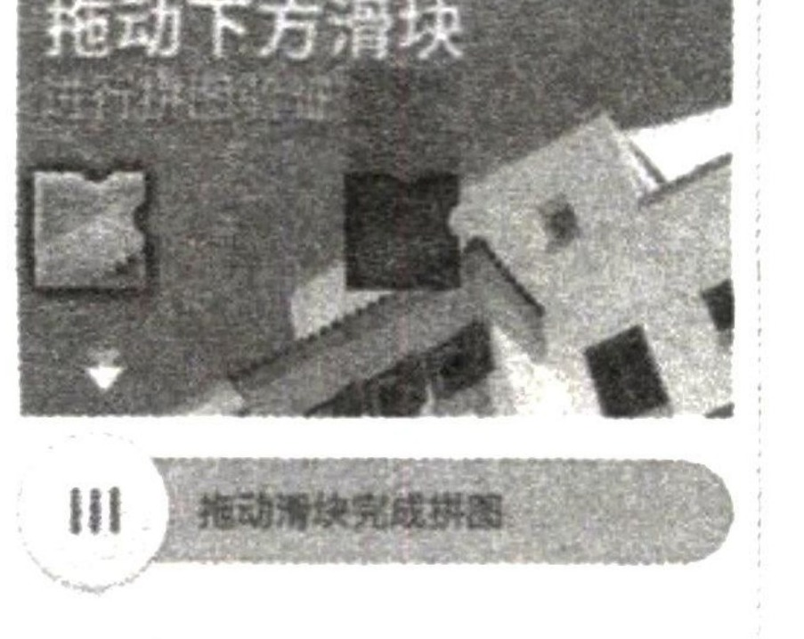
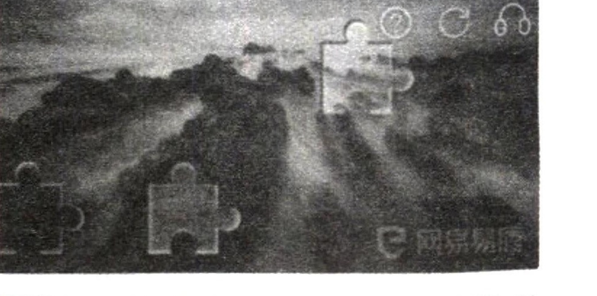
滑动验证码的下方通常有一个滑轨,上面带有类似“拖动滑块完成拼图”字样的文字提示,我们需要向右拖曳滑轨上的滑块,这时正上方的滑块会随它一起向右移动。验证码的右侧有一个滑块缺口,我们将滑块恰好拖到这个缺口处,就算验证成功了,图8-7验证成功的效果如图8-9所示。如果我们想用爬虫自动化完成这一流程,关键步骤有两个:(1)识别目标缺口的位置;(2)将滑块拖到缺口位置。
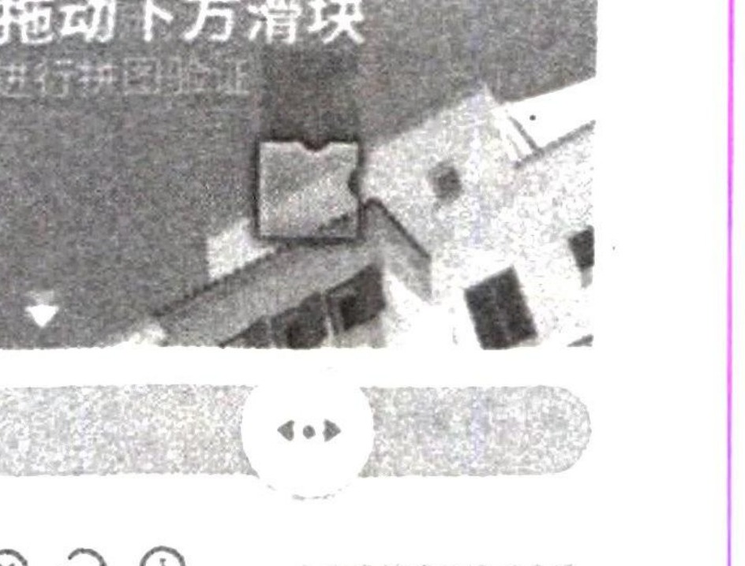
其中第(2)步的实现方式有很多,例如可以用Selenium 等自动化工具模拟这个流程,验证并登录成功后获取对应的 Cookie 或Token 等信息,再进行后续操作,但这种方法的运行效率比较低。也可以直接逆向验证码背后的JavaScript 逻辑,将缺口信息直接传给JavaScript代码,执行获取类似“密钥”信息的操作,再利用获取的“密钥”进行下一步操作。注意出于某些安全方面的考虑,本书不会介绍第(2)步的具体操作,只会讲解第(1)步的技术问题。本节的目标明确了——识别目标缺口的位置,即给定一张滑动验证码的图片,使用图像处理技术识别出缺口的位置。
2. 基本原理
本节中我们会介绍使用OpenCV 技术识别缺口的方法,输入一张带有缺口的验证码图片,输出标明缺口位置(一般是缺口左侧的横坐标)的图片。这里输入的图片如图8-10所示。最后输出的图片如图8-11所示。
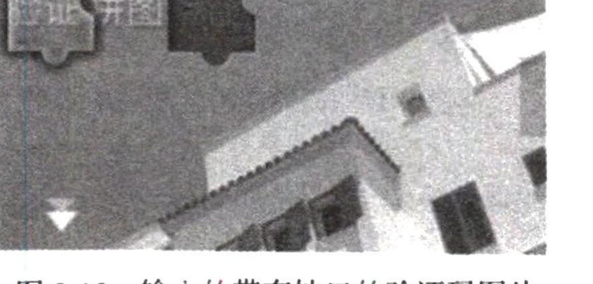
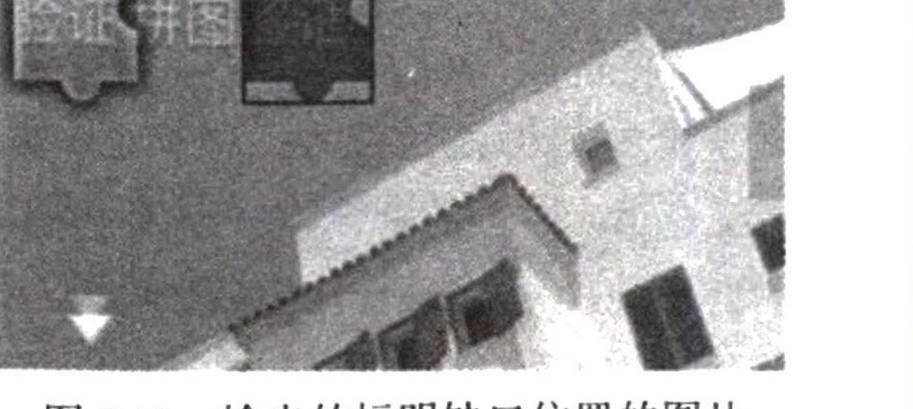
具体的步骤为:(1)对验证码图片进行高斯模糊滤波处理,消除部分噪声干扰;(2)利用边缘检测算法,通过调整相应阈值识别出验证码图片中滑块的边缘;(3)基于上一步得到的各个边缘轮廓信息,对比面积、位置、周长等特征,筛选出最可能的轮廓,得到缺口位置。
3. 准备工作
请确保已经安装好了 python-opencv库,安装方式如下:
pip3 install python-opencv如果安装出现问题,可以参考https://setup.scrape.center/python-opencv。
另外,建议提前准备一张滑动验证码图片,样例图片的下载地址是https://github.com/Python3WebSpider/CrackSlideCaptcha/blob/cv/captcha.png,当然也可以从 https://captchal.scrape.center/上自行截取,得到的图片如图 8-10所示。
4. 基础知识
先来了解一些 OpenCV 的基础方法,以便我们更好地搞懂整个原理。
高斯滤波
高斯滤波用来去除图片中的一些噪声,减少噪声干扰,其实就是把一张图片模糊化,为下一步的边缘检测做好铺垫。OpenCV 提供了一个用于实现高斯模糊的方法,叫作GaussianBlur,其声明如下:
def GaussianBlur(src, ksize, sigmax, dst=None, sigmaY=None, borderType=None)其中比较重要的参数如下。
src:需要处理的图片。
ksize:高斯滤波处理所用的高斯内核大小,需要传入一个元组,包含x和y两个元素。
sigmaX:高斯内核函数在X方向上的标准偏差。
sigmaY:高斯内核函数在Y方向上的标准偏差。若sigmaY为0,就将它设为sigmaX;若sigmaX和 sigmay 都是0,就通过ksize 计算出 sigmaX 和 sigmaY。这里 ksize 和 sigmax是必传参数,对于图8-10,ksize 可以取作(5,5), sigmaX可以取作0。经过高斯滤波处理后,图片会变模糊，效果如图8-12所示。
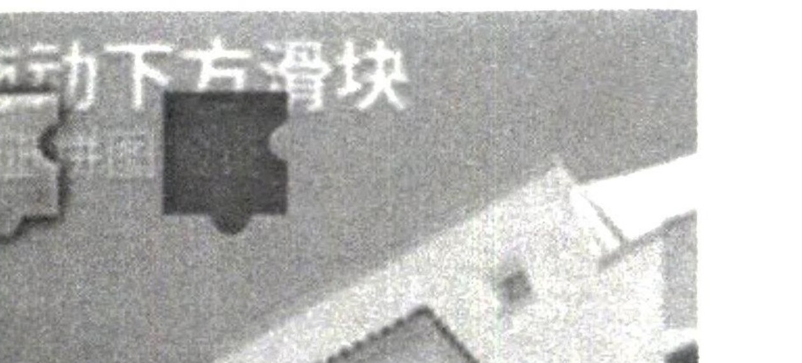
边缘检测
由于验证码图片里的目标缺口通常具有比较明显的边缘,所以借助一些边缘检测算法,再加上调整阈值是可以找出缺口位置的。目前应用比较广泛的边缘检测算法是 Canny,这是John F. Canny于1986年开发出来的一个多级边缘检测算法,效果很不错。OpenCV也实现了算法,方法名就叫Canny,其声明如下:
def Canny(image, threshold1, threshold2, edges=None, apertureSize=None, L2gradient=None)其中比较重要的参数如下。
image:需要处理的图片。
threshold1、threshold2:两个阈值,分别是最小判定临界点和最大判定临界点。
apertureSize:用于查找图片渐变的索贝尔内核的大小。
L2gradient:用于查找梯度幅度的等式。通常来说,只需要设置 threshold1 和 threshold2的值即可,其数值大小需要视具体图片而定,这里可以分别取为200和450。经过边缘检测算法的处理后,会保留下一些比较明显的边缘信息，如图8-13所示。
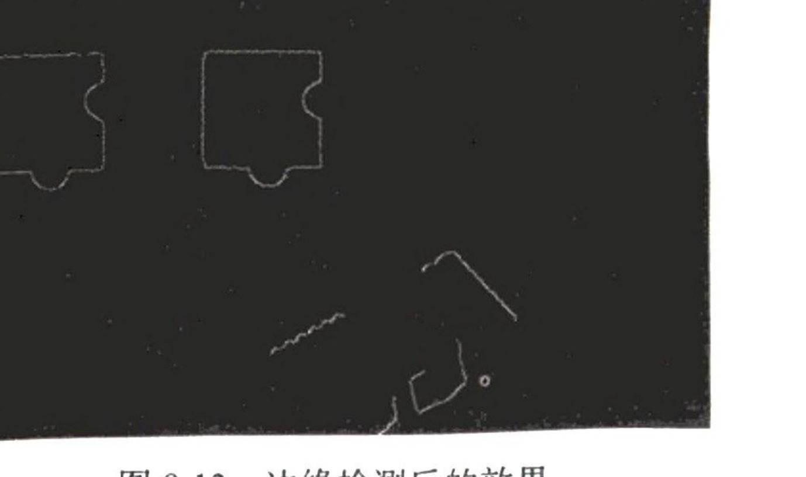
轮廓提取
进行边缘检测处理后,可以看到图片中会保留比较明显的边缘信息,下一步可以利用OpenCV 技术提取出这些边缘的轮廓,这需要用到 findContours方法,其声明如下:
def findContours (image, mode, method, contours=None, hierarchy=None, offset=None)其中比较重要的参数如下。
image:需要处理的图片。mode:用于定义轮廓的检索模式,详情见 OpenCV 官方文档中对 RetrievalModes 的介绍。method:用于定义轮廓的近似方法,详情见 OpenCV 官方文档中对 ContourApproximationModes的介绍。这里,我们将 mode 设置为 RETR_CCOMP,将 method 设置为 CHAIN_APPROX_SIMPLE,具体的选择标准可以参考 OpenCV 官方文档的介绍,这里不再展开讲解。
外接矩形
提取到边缘轮廓后,可以计算出轮廓的外接矩形,以便我们根据面积和周长等参数判断提取到的轮廓是不是目标缺口的轮廓。计算外接矩形使用的方法是 boundingRect,其声明如下:
def boundingRect(array)这个方法只有一个参数,就是 array,它可以是一个灰度图或者2D点集,这里传入轮廓信息。经过对轮廓信息和外接矩形做判断,可以得到类似如图8-14所示的效果。
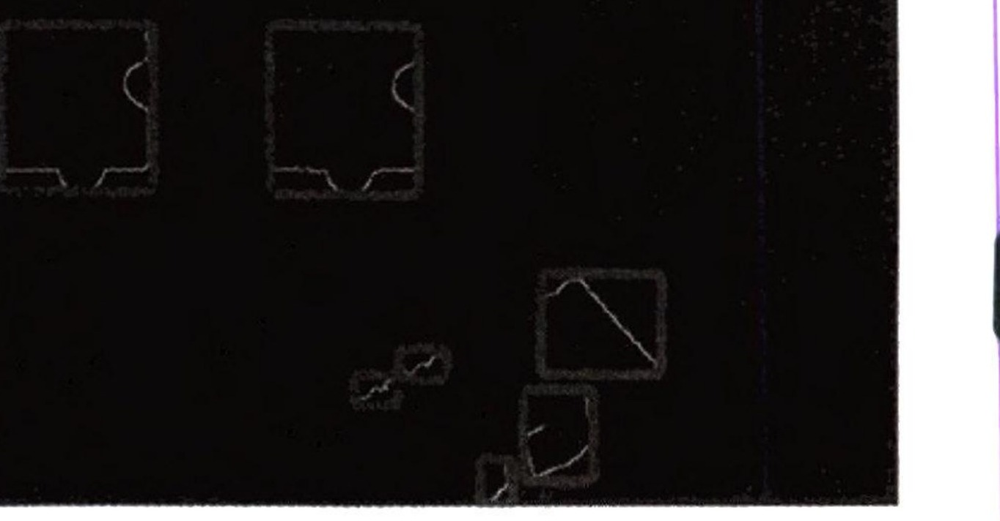
轮廓面积
从图 8-14 可以看到,我们已经成功获取了各个轮廓的外接矩形,很明显有些不是我们想要的,我们可以根据面积和周长等筛选缺口所在的位置,于是需要用到计算面积的方法 contourArea,其定义如下:
def contourArea (contour, oriented=None)其中各参数的介绍如下。
contour:轮廓信息。
oriented:方向标识符,默认值为False。若取 True,则该方法会返回一个带符号的面积值,正负取决于轮廓的方向(顺时针还是逆时针)。若取False,则面积值以绝对值形式返回。返回值就是轮廓的面积。
轮廓周长
同理,周长也有对应的计算方法,叫作 arcLength,其定义如下:
def arcLength(curve, closed)其中各参数的介绍如下。
curve:轮廓信息。
closed:轮廓是否封闭。返回值就是轮廓的周长。
至此,我们介绍了一些 OpenCV 的内置方法,了解这些方法怎么用可以让我们更透彻地理解之后的具体实现。
5. 缺口识别
现在,我们开始真正地实现缺口识别算法。首先,定义实现高斯滤波、边缘检测和轮廓提取的3个方法:
import cv2
GAUSSIAN_BLUR_KERNEL_SIZE = (5,5)
GAUSSIAN_BLUR_SIGMA_X = 0
CANNY_THRESHOLD1 = 200
CANNY_THRESHOLD2 = 450
def get_gaussian_blur_image(image):
return cv2.GaussianBlur(image, GAUSSIAN_BLUR_KERNEL_SIZE, GAUSSIAN_BLUR_SIGMA_X)
def get_canny_image(image):
return cv2.Canny (image, CANNY_THRESHOLD1, CANNY_THRESHOLD2)
def get_contours(image):
contours, = cv2.findContours (image, cv2.RETR_CCOMP, cv2.CHAIN_APPROX_SIMPLE)
return contours对3个方法的介绍如下。
get_gaussian_blur_image:传入待处理图片的信息,返回高斯滤波处理后的图片信息,ksize 参数定义为(5,5), sigmax 参数定义为0。
get_canny_image:传入待处理图片的信息,返回边缘检测处理后的图片信息,threshold1 参数和 threshold2 参数分别定义为200和450。
get_contours:传入待处理图片的信息,返回提取得到的轮廓信息,mode定义为RETR_CCOMP,method 定义为 CHAIN_APPROX_SIMPLE。将原始的待识别的验证码图片命名为captcha.png,接下来分别调用以上方法对此图片做处理:
image_raw = cv2.imread('captcha.png')
image_height, image_width, = image_raw.shape
image_gaussian_blur = get_gaussian_blur_image(image_raw)
image_canny = get_canny_image(image_gaussian_blur)
contours = get_contours(image_canny)我们先读取原始图片,赋值为image_raw,然后获取其宽高信息。接着调用get_gaussian_blur_image方法进行高斯滤波处理,将返回值赋值为 image_gaussian_blur。再将 image_gaussian_blur 传入get_canny_image 方法进行边缘检测处理,并将返回值赋给 image_canny。最后将 image_canny 传入get_contours 方法得到各个边缘的轮廓信息,将返回值赋值为 contours。
得到各个轮廓信息后,便需要根据这些轮廓的外接矩形的面积和周长筛选我们想要的结果了。第一步需要确定怎么筛选,例如我们可以给面积设定一个范围,给周长设定一个范围,另外给缺口位置也设定一个范围,经过实际测量可以得出目标缺口的外接矩形的高度大约是验证码高度的0.25倍,宽度大约是验证码宽度的0.15倍。所以在允许误差是20%的情况下,可以根据验证码的宽高信息大约计算出外接矩形的面积和周长的取值范围。同时,缺口位置(缺口左侧)有一个最小偏移量和一个最大偏移量,这里的最小偏移量是验证码宽度的0.2倍,最大偏移量是验证码宽度的0.85倍。将这些内容综合起来,我们可以定义3个阈值方法:
def get_contour_area_threshold(image_width, image_height):
contour_area_min = (image_width * 0.15) * (image_height * 0.25) * 0.8
contour_area_max = (image_width * 0.15) * (image_height * 0.25) * 1.2
return contour_area_min, contour_area_maxdef get_arc_length_threshold(image_width, image_height):
arc_length_min = ((image_width * 0.15) + (image_height * 0.25)) * 2 * 0.8
arc_length_max = ((image_width * 0.15) + (image_height * 0.25)) * 2 * 1.2
return arc_length_min, arc_length_max
def get_offset_threshold(image_width):
offset_min = 0.2 * image_width
offset_max = 0.85 * image_width
return offset_min, offset_max对这3个方法的介绍如下。
get_contour_area_threshold:定义目标轮廓的面积下限和面积上限,分别为contour_area_min 和 contour_area_max。
get_arc_length_threshold:定义目标轮廓的周长下限和周长上限,分别为arc_length_min 和 arc_length_max。
get_offset_threshold:定义缺口位置的偏移量下限和偏移量上限,分别为 offset_min 和 offset_max。
定义完方法,只需要遍历各个轮廓信息,根据限定条件进行筛选,即可得出目标轮廓的信息,实现如下:
contour_area_min, contour_area_max = get_contour_area_threshold(image_width, image_height)
arc_length_min, arc_length_max = get_arc_length_threshold(image_width, image_height)
offset_min, offset_max = get_offset_threshold(image_width)
offset = None
for contour in contours:
x, y, w, h = cv2.boundingRect(contour)
if contour_area_min < cv2.contourArea (contour) < contour_area_max and \
arc_length_min < cv2.arcLength(contour, True) < arc_length_max and \
offset_min < x < offset_max:
cv2.rectangle(image_raw, (x, y), (x + w, y + h), (0, 0, 255), 2)
offset = x
cv2.imwrite('image_label.png', image_raw)
print('offset', offset)这里我们首先调用get_contour_area_threshold、get_arc_length_threshold 和 get_offset_threshold 方法获取3个判断阈值,然后遍历 contours 并根据这些阈值进行筛选,最终得到的x值就是目标缺口位置的偏移量,将其赋给 offset 变量并打印出来。与此同时,我们调用rectangle 方法对目标缺口的外接矩形做了标注,将其保存为image_label.png 图片。代码的运行结果如下:offset 163同时输出的 image_label.png 文件如图 8-15所示。
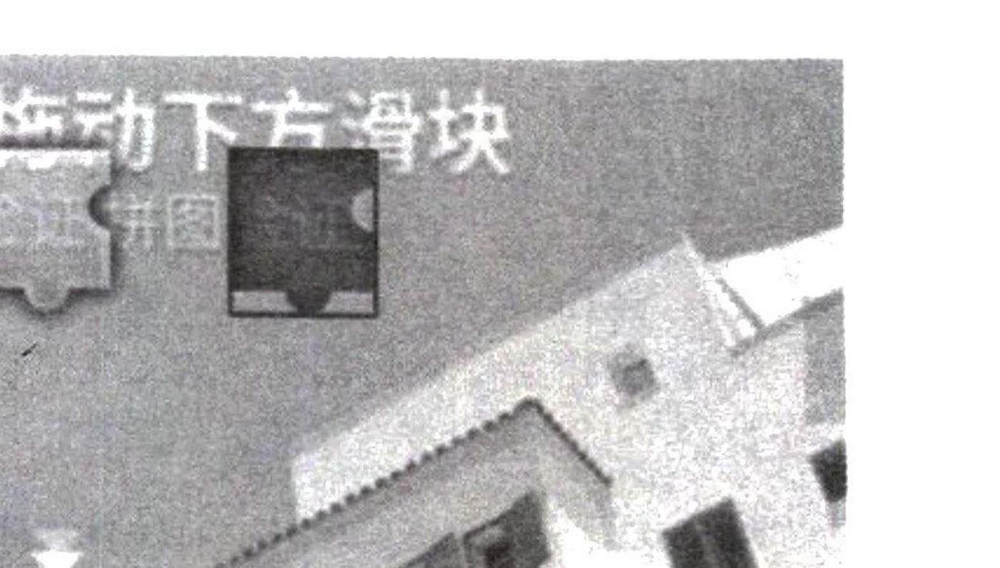
这样我们就成功提取出目标缺口的位置了,本节的问题得以解决。
6. 总结
本节中我们介绍了利用OpenCV技术识别滑动验证码缺口的方法,其中涉及一些关键的图像处理和识别技术——高斯滤波、边缘检测、轮廓提取等算法。我们也可以举一反三,将这些基本的技术应用到其他类型的工作中,也会很有帮助。本节代码见 https://github.com/Python3WebSpider/CrackSlideCaptcha/tree/cv,注意这里是cv分支。
8.3 使用深度学习识别图形验证码
在8.1节和8.2节,我们了解了使用OCR技术和图像处理技术识别验证码的方法,但这些方法有个共同的缺点,就是正确率不够高。从本节开始,我们来学习使用深度学习识别验证码的方法,包括对基本的图形验证码的识别和对滑动验证码缺口的识别。本节中我们先学习使用深度学习识别图形验证码的方法。
1. 准备工作
由于本节所讲的内容涉及深度学习相关的知识,所以在开始之前,请确保已经正确安装好了一个深度学习框架 PyTorch,可以通过 pip3工具安装:
pip3 install torch torchvision如果安装过程出现了问题,可以参考https://setup.scrape.center/pytorch了解更详细的安装说明。另外,由于本节需要使用深度学习训练一个识别图形验证码的模型,因此还需要准备一些训练数据。训练数据又包含两部分,一部分是验证码图片,另一部分是验证码的真实标注。我们可以使用验证码生成器自行生成一些验证码,这样就同时有了验证码图片和标注数据。生成验证码图片需要用到一个叫作 captcha的Python库,可以使用pip3工具安装这个库:
pip3 install captcha另外由于本节涉及的知识点都和深度学习模型的构建、训练、验证和推理等过程相关联,同时伴有数据集的准备过程,导致代码量比较大;而我们的目标是训练出一个能够识别图形验证码的深度学习模型为爬虫所用,并不是侧重学习深度学习的原理,因此本节我们不会从零开始编写一个深度学习模型,建议大家直接下载代码跟着运行一遍即可,有兴趣的话可以深入研究其中的原理。这部分代码见 https://github.com/Python3WebSpider/DeepLearningImageCaptcha,先复制下来:
git clone https://github.com/Python3WebSpider/DeepLearningImageCaptcha.git运行完毕后,本地就会出现一个DeepLearningImageCaptcha 文件夹,证明复制成功。
2. 数据准备
要训练一个深度学习模型,必不可少的就是训练数据。上面也提到了,训练数据分为两部分,一部分是图片数据,即一张张验证码图片,另一部分是标注数据,即验证码的内容是什么。有了这两部分数据,就可以训练一个识别图形验证码的深度学习模型,模型在训练中不断调优的过程,就是逐渐学会怎么识别一张验证码图片的过程。训练好模型后,向模型输入类似的验证码图片,模型便可以识别出这个验证码对应的文本内容。那这些数据怎么准备呢?如果你稍微了解过深度学习相关的内容,相信并不会对数据标注这个词感到陌生,数据标注有相当一部分是需要人工参与的。假如我们有很多验证码图片,又不知道验证码图片对应的文本内容是什么,就需要用到数据标注。说白了,看一下验证码图片,然后把里面的文字记录下来,就相当于标注了一条数据。例如这里有一张验证码图片，如图8-16所示。
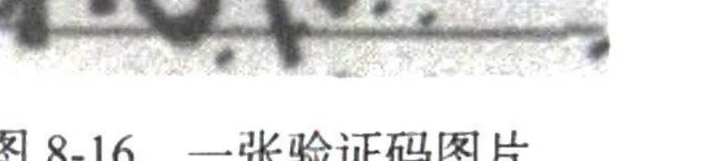
现在我们只是有这张图片，而没有图片里面内容对应的文本信息，这时候就需要标注。可以看到，图片里的内容是验证码，把它记录下来，这张验证码图片的标注就完成了。为了训练一个较好的用于识别图形验证码的深度学习模型,我们可能需要上万、上十万或者数百万条训练数据。此时如果只有验证码图片而没有数据标注,就需要人工标注上万、上十万甚至数百万
条数据,这是个非常枯燥且耗时的工作。
那有没有解决办法呢?办法自然是有的,我们反其道而行之就好了。具体是先随机生成标注数据,即随机生成一些4位的由字母和数字组合而成的数据,然后使用这些已经生成的标注数据生成验证码图片,这样不就省去数据标注的过程了吗?有了这个方法,就不怕准备大量的训练数据了。上述生成验证码的过程分为两步,第一步是生成随机的文本数据,第二步是根据生成的文本数据生成验证码图片。打开项目中的generate.py文件,其中定义了两个方法 generate_captcha_text 和 generate_captcha_text_and_image,分别用于完成这两步:
from captcha.image import ImageCaptcha
from PIL import Image
import random
import setting
def generate_captcha_text():
captcha_text = []
for i in range(setting.MAX_CAPTCHA):
c = random.choice(setting.ALL_CHAR_SET)
captcha_text.append(c)
return ''.join(captcha_text)
def generate_captcha_text_and_image():
image = ImageCaptcha()
captcha_text = generate_captcha_text()
captcha_image = Image.open(image.generate(captcha_text))
return captcha_text, captcha_image这里 generate_captcha_text 方法用于生成随机的文本数据,可以看到方法中先定义了一个执行 MAX_CAPTCHA 次的for循环,每次循环都利用 random.choice 方法随机从 ALL_CHAR_SET 里挑选一个字符并放入 captcha_text,最后将 captcha_text 中的字符拼接在一起。其中 MAX_CAPTCHA 和 ALL_CHAR_SET 的定义在 setting.py 文件里,相应代码如下:
NUMBER = ['0', '1', '2', '3', '4', '5', '6', '7', '8', '9']
ALPHABET = ['A', 'B', 'C', 'D', 'E', 'F', 'G', 'H', 'I', 'J', 'K', 'L', 'M', 'N', 'O', 'P', 'Q', 'R', 'S',
'T', 'U', 'V', 'w', 'x', 'Y', 'Z']
ALL_CHAR_SET = NUMBER + ALPHABET
MAX_CAPTCHA = 4可以看到 MAX_CAPTCHA 的值是4,所以最后拼接而成的就是4位验证码。ALL_CHAR_SET 的值是10个阿拉伯数字和26个英文字母构成的列表,所以拼接而成的验证码文本就是4位数字和字母的组合。接下来我们修改 generate.py 文件,先生成一批训练数据,建议生成10万个验证码,按如下这样修改 count 变量和 path 变量:
count = 100000
path = setting.TRAIN_DATASET_PATH其中 count 就是验证码的个数,这里直接设定为100000,path 是验证码图片保存的路径,这在 setting.py 文件中已经定义好了,有如下三个选择。
TRAIN_DATASET_PATH:训练集所在的路径,数据用于模型的训练。
EVAL_DATASET_PATH:验证集所在的路径,一般在训练过程中或者训练完毕后用到,可用于验证模型的训练效果。
PREDICT_DATASET_PATH:推理集,一般在训练完毕后用到,可用于模型推理和测试。
然后运行 generate.py 文件里的代码:
python3 generate.py输出结果类似如下这样:
saved 1: ΧΑΡΑ_1620106547.png saved 2: F6ZO_1620106547.png saved 3: XXGY_1620106547.png
...saved 1000: UL1C_1620106547.png saved 1001: MT2U_1620106547.png这里生成了非常多的验证码数据,标注结果直接出现在文件名中,最终生成的训练集数据如图8-17所示。
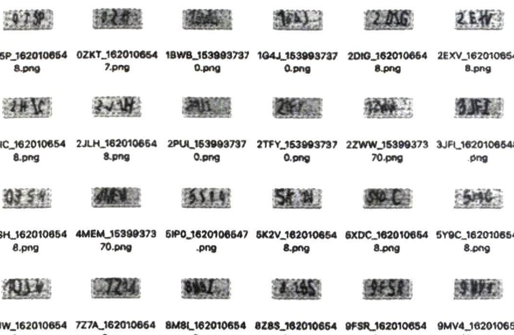
利用同样的方法,可以生成验证集,用于验证模型的训练效果。还是修改count 变量和 path 变量:
count = 3000
path = setting.EVAL_DATASET_PATH验证集不需要像训练集那么大,count 就修改为3000,path修改为EVAL_DATASET_PATH,然后重新运行 generate.py 文件里的代码:python3 generate.py这样就生成了验证集数据,如图8-18所示。
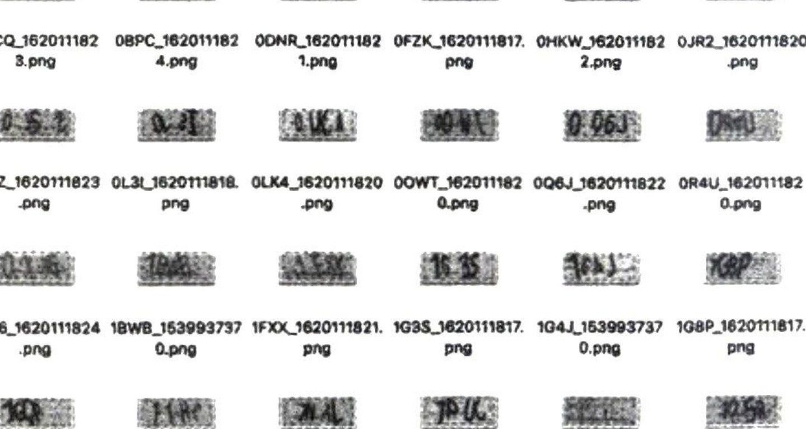
数据都准备好后,就可以开始训练模型了。
3. 模型训练
本节中我们使用的深度学习模型是一个基本的CNN模型, 模型定义在model.py文件里, 定义如下:
import torch.nn as nn
import setting
class CNN(nn.Module):
def __init__(self):
super(CNN, self).__init__()
self.layer1 = nn.Sequential(
nn.Conv2d(1, 32, kernel_size=3, padding=1),
nn.BatchNorm2d(32),
nn.Dropout(0.5),
nn.ReLU(),
nn.MaxPool2d(2))
self.layer2 = nn.Sequential(
nn.Conv2d(32, 64, kernel_size=3, padding=1),
nn.BatchNorm2d(64),
nn.Dropout(0.5),
nn.ReLU(),
nn.MaxPool2d(2))
self.layer3 = nn.Sequential(
nn.Conv2d(64, 64, kernel_size=3, padding=1),
nn.BatchNorm2d(64),
nn.Dropout(0.5),
nn.ReLU(),
nn.MaxPool2d(2))
self.fc = nn.Sequential(
nn.Linear((setting.IMAGE_WIDTH // 8) * (setting.IMAGE_HEIGHT // 8) * 64, 1024),
nn.Dropout(0.5),
nn.ReLU())
self.rfc = nn.Sequential(
nn.Linear(1024, setting.MAX_CAPTCHA * setting.ALL_CHAR_SET_LEN),
)
def forward(self, x):
out = self.layer1(x)
out = self.layer2(out)
out = self.layer3(out)
out = out.view(out.size(0), -1)
out = self.fc(out)
out = self.rfc(out)
return out可以看到这里定义了三层, 每层都是Conv2d(卷积)、BatchNorm2d(批标准化)、Dropout(随机失活)、ReLU(激活函数)和MaxPool2d(池化)的组合, 经过这三层处理后, 由一个全连接网络层输出最终的结果, 用于计算模型的最终损失。
模型的训练过程定义在 train.py 文件中, 整个训练逻辑是这样的:(1) 引入定义好的模型, 即 model.py 文件, 对模型进行初始化;(2) 定义损失函数 loss;(3) 定义优化器 optimizer;(4) 加载数据, 一般包括训练集数据和验证集数据;(5) 执行训练, 这个过程包括反向求导、模型权重更新;(6) 在执行完特定的训练步数后, 验证和保存模型。
了解了基本的逻辑之后, 就可以尝试用现有的数据训练一个深度学习模型了。怎么训练呢?运行训练模型, 即 train.py 文件即可:
python3 train.py训练过程的输出结果如下:
epoch: 0 step: 9 loss: 0.2004123032093048
epoch: 0 step: 19 loss: 0.15169423818588257
epoch: 0 step: 29 loss: 0.14101602137088776
...
epoch: 10 step: 109 loss: 0.0204183830261237
epoch: 10 step: 119 loss: 0.0216972048472911
epoch: 10 step: 129 loss: 0.0210623586177826可以看到,训练过程中模型的损失在不断降低,说明模型在不断地学习和优化,同时每训练完一个轮次之后都会执行一次模型验证。由于在训练模型时没有使用验证集数据,所以用验证集数据来验证是可以得到模型的真实正确率的,是更为科学的。另外在每次的验证过程中,还会保存最优的验证结果以及最优的模型,存为best_model.pkl文件。注意 推荐使用GPU来训练模型,速度会比不用GPU快很多。关于如何设置用GPU训练模型,可以参考 PyTorch 官方教程,这里不再赘述。经过一段时间的训练,模型的损失趋近于0,训练的正确率在不断提升,验证的正确率能达到96%以上,最后可以在本地看到一个best_model.pkl 文件,这便是我们想要的模型。
4. 测试
现在我们来测试一下得到的模型,先在PREDICT_DATASET_PATH变量对应的路径下生成几个验证码图片,生成过程前面讲过也实践过。这里随意选取两个验证码图片放在那个路径下,如图8-19所示。然后在 predict.py文件中加载上面得到的模型 best_model.pkl,关键代码如下:
cnn.load_state_dict(torch.load('best_model.pkl'))并根据加载的模型对定义的CNN模型的权重进行初始化,整个模型加载完毕后,就和刚才训练时一样强大,拥有识别图形验证码的能力。运行 predict.py 文件:
python3 predict.py可以看到输出结果如下:
FIOG
IW6S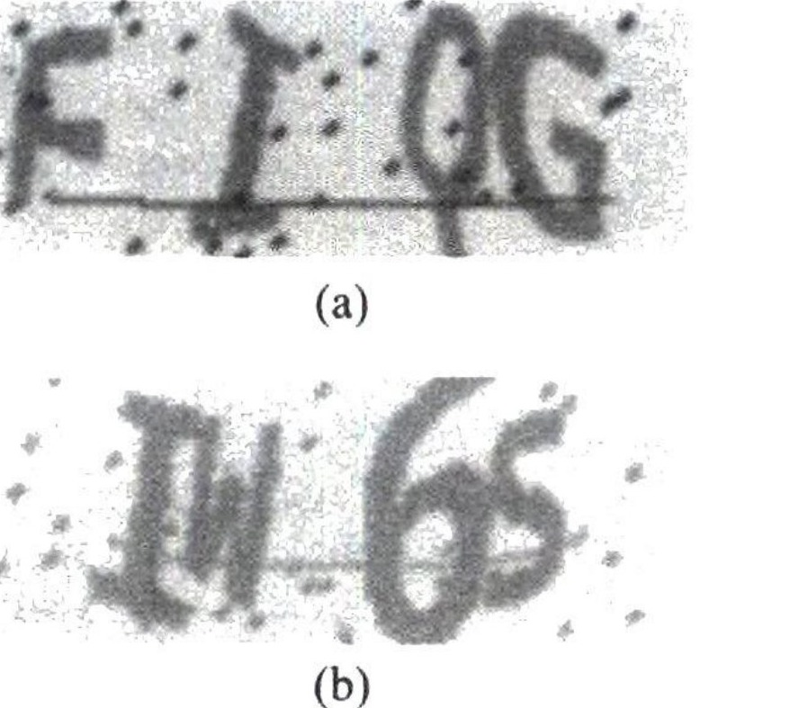
识别成功!这样我们就成功训练出了一个识别图形验证码的深度学习模型。
5. 总结
本节介绍了利用深度学习模型识别图形验证码的整体流程,最终我们成功训练出模型,并得到了一个深度学习模型文件。往这个模型中输入一张图形验证码,它便会预测出其中的文本内容。至此,我们还可以基于本节介绍的内容进行一步的优化。
由于本节各个环节使用的验证码都是由 captcha库生成的,验证码风格也都是事先设定好的,所以模型的识别正确率会比较高。但如果输入其他类型的验证码,例如文本形状、文本数量、干扰线样式和本节的不同,模型识别的正确率可能并不理想。为了让模型能够识别更多的验证码,可以多生成一些不同风格的验证码来训练模型,这样得到的模型会更加健壮。
当前模型的预测过程是通过命令行执行的,这在实际使用时可能并不方便。可以考虑将预测过程对接 API 服务器,例如对接 Flask、Django、FastAPI等,把预测过程实现为一个支持 POST 请求的API,这个API可以接收一张验证码图片,并返回验证码的文本信息,这样会使模型更加方便易用。本节代码见 https://github.com/Python3WebSpider/DeepLearningImageCaptcha。
8.4 使用深度学习识别滑动验证码的缺口
上一节中我们使用深度学习完成了图形验证码的识别过程,正确率和使用 OCR 技术相比,高了很多。这时可能有朋友会说,8.2节不是还介绍了一种使用图像处理技术识别滑动验证码缺口的方法吗?深度学习可以用在这种场景下吗?当然可以,本节中我们就来了解使用深度学习识别滑动验证码缺口的方法。
1. 准备工作
和8.3节一样,本节主要侧重于介绍利用深度学习模型识别滑动验证码缺口的过程,不会深入讲解深度学习模型的算法。另外由于整个模型的实现较为复杂,故不会从零开始编写代码,而是倾向于提前把代码下载下来进行实操练习。代码地址为https://github.com/Python3WebSpider/DeepLearningSlideCaptcha2,还是先把它复制下来:
git clone https://github.com/Python3WebSpider/DeepLearningSlideCaptcha2.git运行完毕后,本地就会出现一个 DeepLearningImageCaptcha2 文件夹,证明复制成功。之后,切换到 DeepLearningImageCaptcha2文件夹,安装必要的依赖库:
pip3 install -r requirements.txt运行完毕后,本项目所需的依赖库就全部安装好了。
2. 目标检测
识别滑动验证码的目标缺口问题,其实可以归结为目标检测问题。什么叫目标检测?这里简单介绍一下。目标检测,顾名思义就是把想找的东西找出来,例如这里有一张包含狗的图片,我们想知道狗和狗的舌头在哪儿,如图8-20所示。先找到图片中的狗和狗的舌头,再把它们框起来,就是目标检测。我们希望经过目标检测算法处理后得到的图片如图8-21所示。
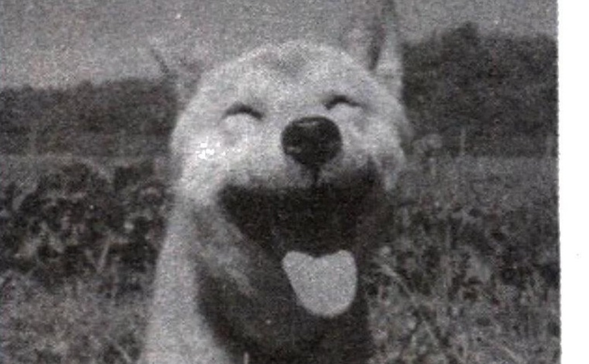
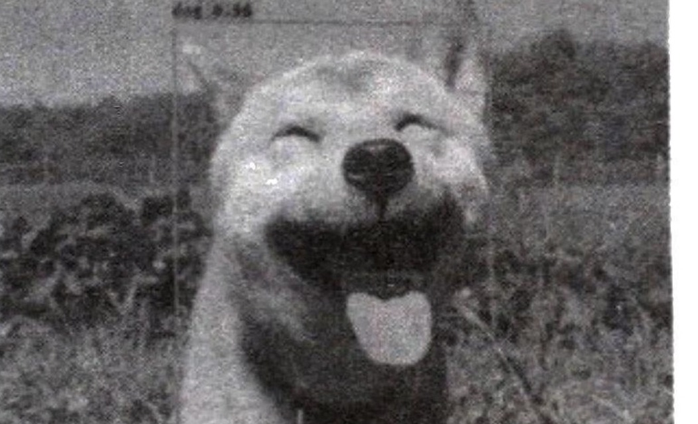
现在比较流行的目标检测算法有R-CNN、Fast R-CNN、Faster R-CNN、SSD、YOLO等,感兴趣的话可以了解一下,当然就算不太了解对学习本节也不会有影响。
目前目标检测算法主要有两种实现方法——————————阶段式和两阶段式,英文叫作 One Stage 和 Two Stage。
One Stage:不需要产生候选框,直接将目标的定位和分类问题转化为回归问题,俗称“看一眼”,使用这种实现的算法有 YOLO 和 SSD,这种方法虽然正确率不及 Two Stage,但架构相对简单,检测速度更快。
Two Stage:算法首先生成一系列目标所在位置的候选框,再对这些框选出来的结果进行样本分类,即先找出来在哪儿,再分出来是啥,俗称“看两眼”,使用这种实现的算法有R-CNN、Fast R-CNN、Faster R-CNN等,这种方法架构相对复杂,但正确率高。这里我们选用 YOLO 算法实现对滑动验证码缺口的识别。YOLO 的英文全称是 You Only Look Once,目前的最新版本是V5,应用比较广泛的版本是V3,算法的具体流程我们就不过多介绍了,感兴趣的话可以搜一下相关资料。另外,可以了解一下 YOLO V1~V3版本的不同和改进之处,这里列几个参考链接。
YOLO V3的论文:https://pjreddie.com/media/files/papers/YOLOv3.pdf。
介绍 YOLO V3: https://zhuanlan.zhihu.com/p/34997279。YOLO OV1~V3版本的对比:https://www.cnblogs.com/makefile/p/yolov3.html。
3. 数据准备
和8.3节一样,训练深度学习模型需要准备训练数据。这里的数据也分两部分,一部分是验证码图片,另一部分是数据标注。和8.3节不一样的是,这次的数据标注不再是单纯的验证码文本,而是缺口位置,缺口对应一个矩形框,要表示矩形框,至少需要4个数据,如矩形左上角的点的横纵坐标x、y加上矩形的宽高w、h。明确了数据是什么,接下来就着手准备吧。第一步是收集验证码图片,第二步是标注图片中的缺口位置并转为化想要的4位数字。举个例子,打开网站https://captchal.scrape.center/,点击“登录”按钮就会弹出一个滑动验证码,如图8-22所示。单独将图 8-23 中框起来的区域保存下来,就收集了一张验证码图片。
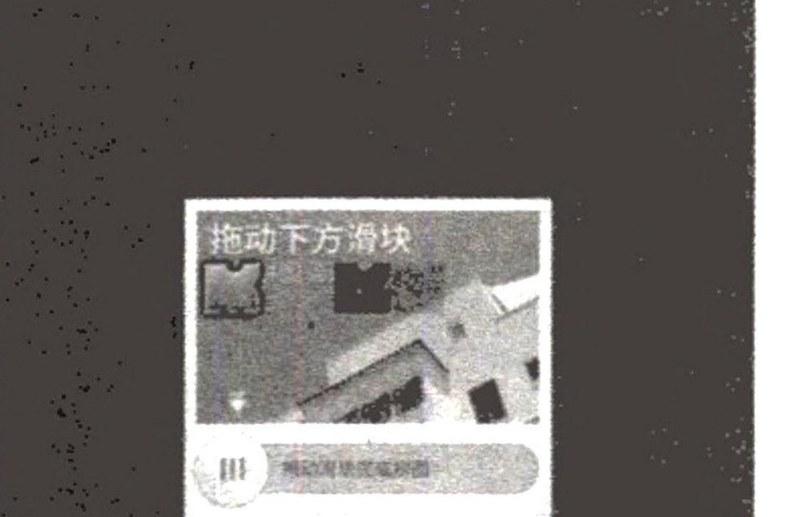
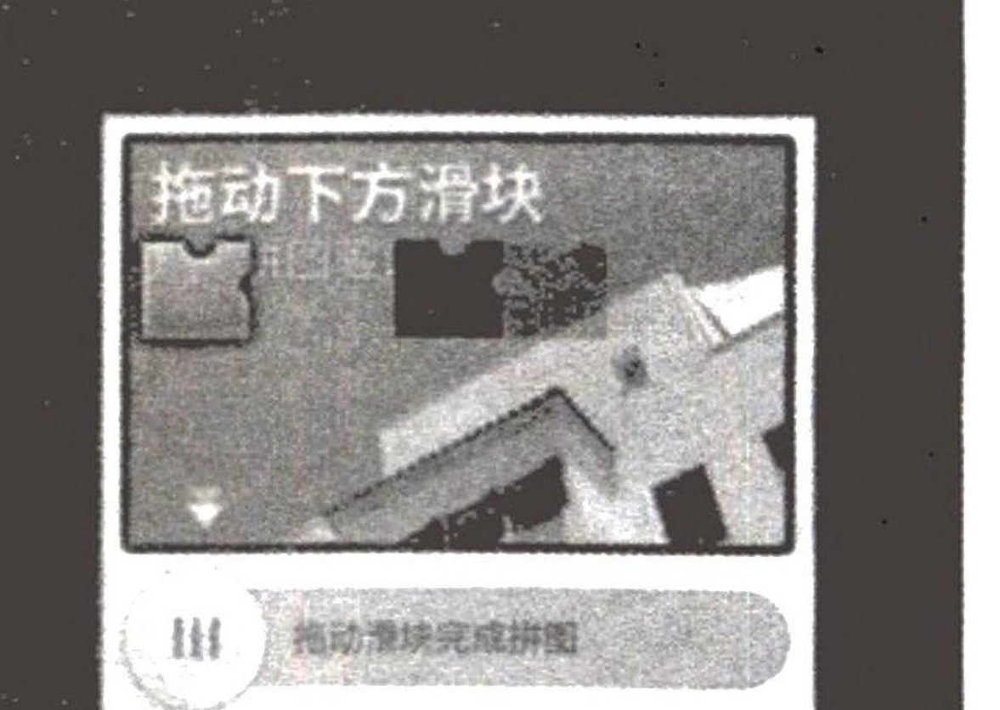
怎么保存那个区域呢?手工截图肯定不可靠,因为要收集的图片量非常大,这么做不仅费时费力,还不好准确地定位边界,会导致保存下来的图片有大有小。为了解决这个问题,可以简单写一个脚本实现自动化裁切和保存,就是之前下载的代码仓库中的collect.py文件,其内容如下:
from selenium import webdriver
from selenium.webdriver.common.by import By
from selenium.webdriver.support.ui import WebDriverWait
from selenium.webdriver.support import expected_conditions as EC
from selenium.common.exceptions import WebDriverException
import time
from loguru import logger
COUNT = 1000
for i in range(1, COUNT + 1):
try:
browser = webdriver.Chrome()
wait = WebDriverWait(browser, 10)
browser.get('https://captcha1.scrape.center/')
button = wait.until(EC.element_to_be_clickable(
(By.CSS_SELECTOR, '.el-button')))
button.click()
captcha = wait.until(
EC.presence_of_element_located((By.CSS_SELECTOR, '.geetest_slicebg.geetest_absolute')))
time.sleep(5)
captcha.screenshot(f'data/captcha/images/captcha_{i}.png')
except WebDriverException as e:
logger.error(f'webdriver error occurred {e.msg}')
finally:
browser.close()代码中先是一个 for循环,循环次数为COUNT,每次循环都使用 Selenium启动一个浏览器,然后打开目标网站,模拟点击“登录”按钮的操作触发验证码弹出,然后截取验证码对应的节点,再调用screenshot 方法保存下来。运行 collect.py 文件:
python3 collect.py运行完后,data/captcha/images/目录下就会出现很多验证码图片,例如图8-24所示的这样。
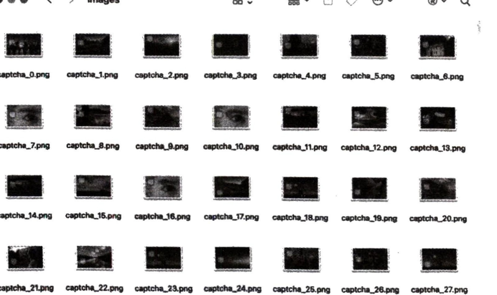
第一步完成,接下来完成第二步—————准备数据标注,这里推荐使用的工具是 labelImg,下载地址为https://github.com/tzutalin/labelImg。使用pip3工具安装它:
pip3 install labelImg安装完后可以直接在命令行运行:labelImg这样就成功启动了labelImg工具,如图8-25所示。
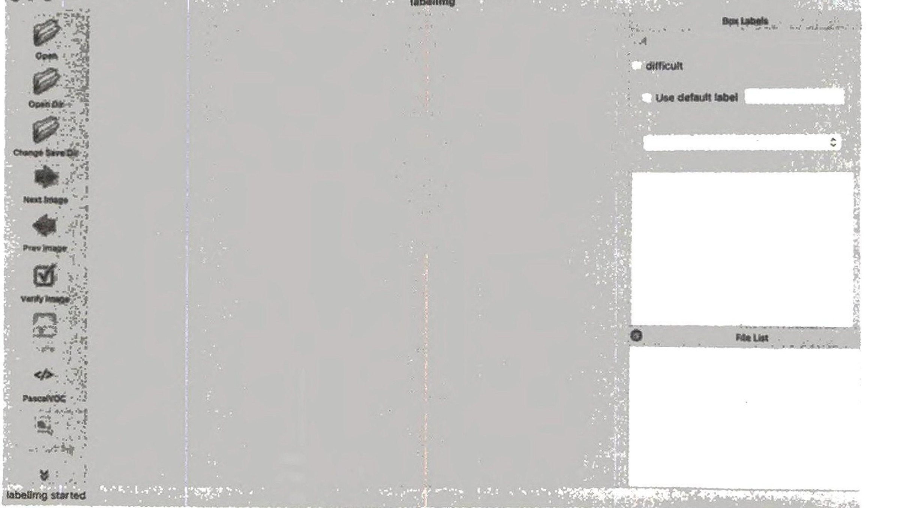
点击左侧的 Open Dir 按钮打开 data/captcha/images/目录,然后点击左下角的 Create RectBox 创建一个标注框,可以将缺口所在的矩形框框起来,框完后 labelImg会弹出填写保存名称的提示框,填写target,然后点击OK按钮,如图8-26所示。
这时会发现本地保存了一个xml文件,内容如下:
<annotation>
<folder>images</folder>
<filename>captcha_0.png</filename>
<path>data/captcha/images/captcha_0.png</path>
<source>
<database>Unknown</database>
</source>
<size>
<width>520</width>
<height>320</height>
<depth>3</depth>
</size>
<segmented>0</segmented>
<object>
<name>target</name>
<pose>Unspecified</pose>
<truncated>0</truncated>
<difficult>0</difficult>
<bndbox>
<xmin>321</xmin>
<ymin>87</ymin>
<xmax>407</xmax>
<ymax>167</ymax>
</bndbox>
</object>
</annotation>从中可以看到,size 节点里有三个节点,分别是width、height 和 depth,代表原验证码图片的宽度、高度和通道数。object节点下的bndbox节点包含标注的缺口位置,通过观察对比可以知道 xmin、ymin 指的是左上角的坐标,xmax、ymax指的是右下角的坐标。我们可以使用下面的方法简单做一下数据处理:
import xmltodict
import json
def parse_xml(file):
xml_str = open(file, encoding='utf-8').read()
data = xmltodict.parse(xml_str)
data = json.loads(json.dumps(data))
annoatation = data.get('annotation')
width = int(annoatation.get('size').get('width'))
height = int(annoatation.get('size').get('height'))
bndbox = annoatation.get('object').get('bndbox')
box_xmin = int(bndbox.get('xmin'))
box_xmax = int(bndbox.get('xmax'))
box_ymin = int(bndbox.get('ymin'))
box_ymax = int(bndbox.get('ymax'))
box_width = (box_xmax box_xmin) / width
box_height = (box_ymax - box_ymin) / height
return box_xmin / width, box_ymin / height, box_width / width, box_height / height这里定义了一个parse_xml方法,这个方法首先读取xml文件,然后调用xmltodict 库里的 parse 方法将XML 字符串转换为JSON字符,之后依次读取验证码的宽高信息和缺口的位置信息,最后以元组的形式返回我们想要的数据—————缺口左上角的点的坐标和宽高的相对值。都标注好后,对每个 xml文件都调用一次此方法便可以生成想要的标注结果了。我已经将对应的标注结果都处理好了,大家可以直接使用,结果的保存路径为data/captcha/labels,如图8-27所示。
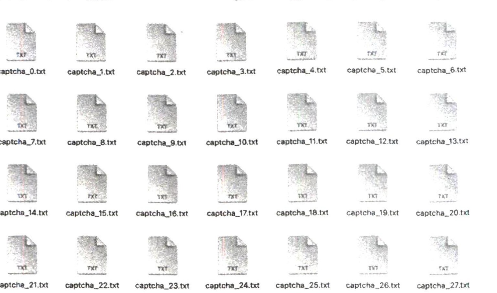
其中每个txt 文件各对应一张验证码图片的标注结果,文件内容类似这样:0 0.6153846153846154 0.275 0.16596774 0.24170968第一位o代表标注目标的索引,由于我们只需要检测一个缺口,所以索引就是0;第二位和第三位代表缺口左上角的点在验证码图片中所处的位置,例如0.6153846153846154代表从横向看,缺口左上角的点大约位于验证码的61.5%处,这个值乘上验证码的宽度520得到320,表示左上角的点的偏移量是320 像素;第四位和第五位代表缺口的宽高和验证码图片的宽高的比,例如用第五位的0.24170968 乘以验证码图片的高度320得到大约77,表示缺口的高度大约为77像素。至此,数据准备阶段完成。
4. 训练
为了达到更好的训练效果,还需要下载一些预训练模型,预训练的意思是已经有一个提前训练好的基础模型了。直接使用预训练模型中的权重文件,就不用从零开始训练模型了,只需要基于之前的模型进行微调即可,这样既节省训练时间,又能达到比较好的效果。先下载预训练模型,YOLO V3 模型才能有不错的训练效果。下载预训练模型的命令如下:bash prepare.sh注意在 Windows环境下,请使用Bash命令行工具(如Git Bash)运行此命令。之后,就能下载 YOLO V3 模型的一些权重文件,包括yolov3.weights 和 darknet.weights。在正式训练模型之前,需要使用这些权重文件初始化 YOLO V3 模型。接下来就是训练了,还是推荐使用GPU来训练,运行如下命令:bash train.sh注意同样,在Windows环境下请使用Bash命令行工具(如Git Bash)运行此命令。在训练过程中,我们可以使用TensorBoard 观察 loss和mAP的变化,运行如下命令:tensorboard --logdir='logs' --port=6006 --host 0.0.0.0
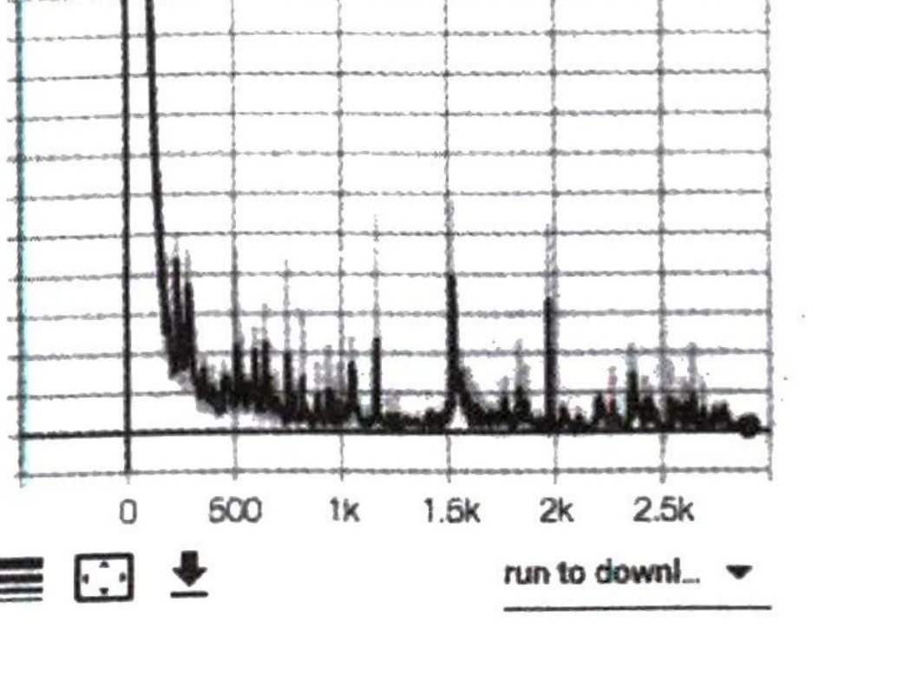
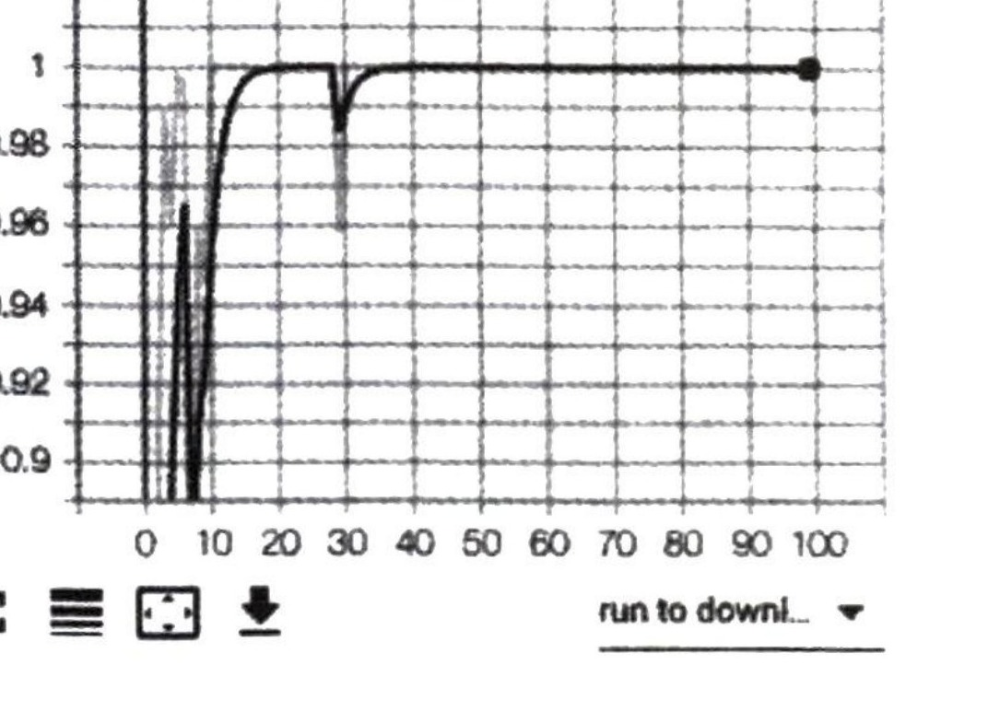
可以看到,loss 最初非常高,之后下降到很低,正确率也逐渐接近 100%。以下是模型训练过程中命令行中的一些输出结果:
[Epoch 99/100, Batch 27/29]| Metrics | YOLO Layer o | YOLO Layer 1 | YOLO Layer 2 |
|---|
+| grid_size
loss：0.028268| 0.046053 0.043745 X 0.002108 0.005267| 0.008111 y 0.004561 0.002016| 0.009047 W 0.001284 0.004618 0.000207 h| 0.000594 0.000528| 0.000946 conf 0.019700 0.033624 0.025432 cls 0.000022| 0.000001 0.000002 cls_acc 100.00%100.00%100.00%recall50 1.000000 1.000000 1.000000 recall75 1.000000 1.000000 1.000000 precision 1.000000 0.800000 0.666667 conf_obj 0.994271 0.999249 0.997762 conf_noobj | 0.000126 | 0.000158 0.000140 Total loss 0.11806630343198776这里显示了训练过程中各个指标的变化情况,如 loss、recall、precision 和 conf_obj,分别代表损失(越小越好)、召回率(能识别出的结果占应该识别出的结果的比例,越高越好)、精确率(识别结果中识别正确的概率,越高越好)和置信度(模型有把握识别对的概率,越高越好),可以作为参考。
5. 测试
模型训练完毕后,会在 checkpoints 文件夹下生成一些 pth 文件,这些就是模型文件,和 8.3 节的 best_model.pkl 文件原理一样,只是表示形式略有不同,我们可以直接使用这些模型做测试,生成标注结果。
先在测试文件夹 data/captcha/test下放入一些验证码图片,样例如图 8-30所示。运行如下命令做测试:bash detect.sh该命令会读取测试文件夹下的所有图片,并将处理后的结果输出到data/captcha/result文件夹,控制台会输出一些验证码的识别结果。同时,在data/captcha/result文件夹下会生成标注结果,样例如图8-31 所示。
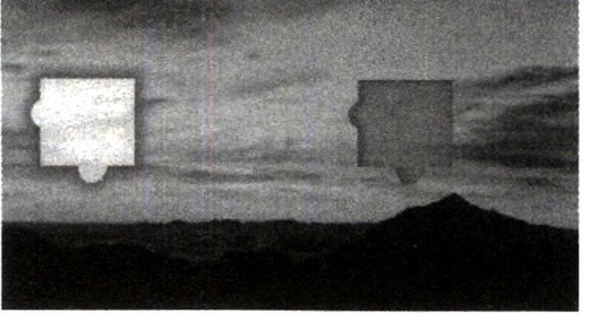
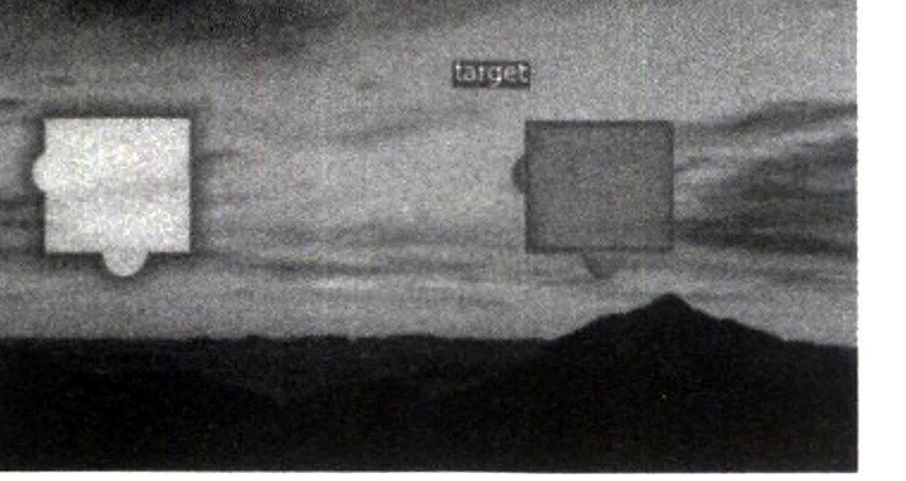
可以看到,缺口被准确识别出来了。实际上,detect.sh命令的作用是运行 detect.py文件,这个文件中的关键代码如下:
bbox = patches. Rectangle((x1 + box_w / 2, y1 + box_h / 2), box_w, box_h, linewidth=2, edgecolor=color,
facecolor="none")
print('bbox', (x1, y1, box_w, box_h), 'offset', x1)这里的bbox 就是指最终缺口的轮廓位置,x1指的是轮廓最左侧距离整个验证码最左侧的横向偏移量,即 offset。通过这两个信息,就能得到缺口的位置了。得到了目标缺口的位置,便可以进行一些模拟滑动的操作从而通过验证码的检测。
6. 总结
本节主要介绍使用深度学习识别滑动验证码缺口的整体流程,最终我们成功训练出了模型,并得到了一个深度学习模型文件。往这个模型中输入一张滑动验证码图片,模型便会输出缺口的相关信息,包括偏移量、宽度等,通过这些信息可以确定缺口所处的位置。和8.3节一样,本节介绍的内容也可以做进一步优化,即把预测过程对接 API 服务器,例如对接Flask、Django、FastAPI等,把预测过程实现为一个支持POST请求的API。本节代码见 https://github.com/Python3 WebSpider/DeepLearningSlideCaptcha2。
8.5 使用打码平台识别验证码
在前面四节,我们学习了几种识别验证码的方法,这些方法或多或少存在一些缺点,例如 OCR、OpenCV 的识别正确率不高,深度学习的效果虽然还不错,但是训练和维护模型的流程相对复杂。那有没有其他识别验证码的方法呢?有,就是本节要讲的打码平台。利用打码平台可以轻松识别各种各样的验证码,图形验证码、滑动验证码、点选验证码和逻辑推理验证码都不在话下,而且不需要懂任何算法,以及维护任何模型或服务。打码平台提供了一系列API,只需要向 API 上传验证码图片,它便会返回对应的识别结果。
使用打码平台识别验证码
其实打码平台一般是半自动化的,也就是平台背后既有识别算法、模型的支持,也有人工打码的支持。对于普通的由数字或字母构成的图形验证码,平台背后一般有深度学习模型作为支持,不仅识别精度高而且速度快。对于一些较为复杂的、使用模型或算法难以实现或者难以达到较好效果的验证码,会转到人工处理,打码人员通过平台提供的标注工具做标注,平台再通过API 返回标注结果。
我个人比较推荐的一个平台是超级鹰,其官网为https://www.chaojiying.com/, 首页如图8-32所示,这个平台提供的服务种类非常广泛,可识别的验证码类型非常多;识别效果也很不错。
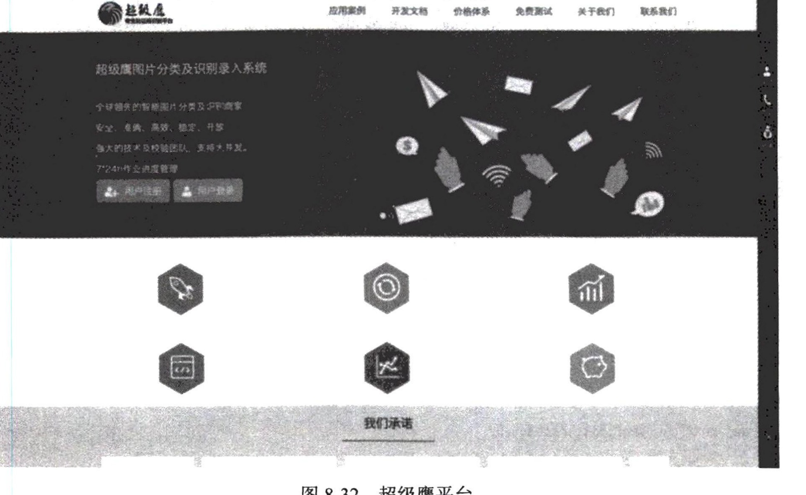
超级鹰平台支持识别如下内容。
英文数字:英文字母和数字混合而成的内容,最多识别20位。
中文汉字:最多识别7个汉字。
纯英文:最多识别12个英文字母。
纯数字:最多识别11位数字。
任意特殊字符:不定长的汉字、英文和数字混合而成的内容,拼音首字母,计算题,成语混合,集装箱号等。
问答:例如问答题、选择题、复杂计算题。
坐标多选:支持二选一、多选一、多选多等,通常返回选择结果的左上角的点的坐标。
如有变动,请以官网为准:https://www.chaojiying.com/price.html。
本节中我们就来学习利用打码平台识别各类验证码的流程,涉及的验证码类型有图形验证码、点选验证码、滑动验证码和问答验证码。
1. 准备工作
本节需要用到两个Python 库——————opencv-python 和 Pillow,请确保已经正确安装,安装命令如下:
pip3 install opencv-python pillow如果在安装过程中遇到问题,可以参考 https://setup.scrape.center/opencv-python 和 https://setup.
scrape.center/pillow。
另外请在超级鹰平台上注册一个账号,并购买一定的题分,具体的操作流程见官网或者联系官方客服。
大家可以自行下载本节测试所用的验证码,地址为https://github.com/Python3WebSpider/CaptchaPlatform, 可以先复制下来:
git clone https://github.com/Python3WebSpider/CaptchaPlatform.git复制之后,本地会出现一个CaptchaPlatform 文件夹,该文件夹内部存放的便是本节测试所需的验证码图片。另外,文件夹中还有一个叫 chaojiying.py 的文件,这是基于官方 SDK 改写的,文件内容如下:
import requests
from hashlib import md5
class Chaojiying(object):
def __init__(self, username, password, soft_id):
self.username = username
self.password = md5(password.encode('utf-8')).hexdigest()
self.soft_id = soft_id
self.base_params = {
'user': self.username,
'pass2': self.password,
'softid': self.soft_id,
}
self.headers = {
'User-Agent': 'Mozilla/4.0 (compatible; MSIE 8.0; Windows NT 5.1; Trident/4.0)',
}
def post_pic(self, im, codetype):
"""
im:图片字节
codetype:题目类型参考http://www.chaojiying.com/price.html
"""
params = {
'codetype': codetype,
}
params.update(self.base_params)
files = {'userfile': ('ccc.jpg', im)}
r = requests.post('http://upload.chaojiying.net/Upload/Processing.php', data=params, files=files,
headers=self.headers)
return r.json()
def report_error(self, im_id):
"""
im id:报错题目的图片 ID
"""
params = {
'id': im_id,
}
params.update(self.base_params)
r = requests.post('http://upload.chaojiying.net/Upload/ReportError.php', data=params,
headers=self.headers)
return r.json()其中定义了一个 Chaojiying 类,其构造方法接收三个参数。
username:超级鹰账户的用户名。
password:超级鹰账户的密码。
soft_id:软件 ID,需要到超级鹰后台的“软件ID”中获取,例如图8-33这样,就生成了一个软件ID:915502。
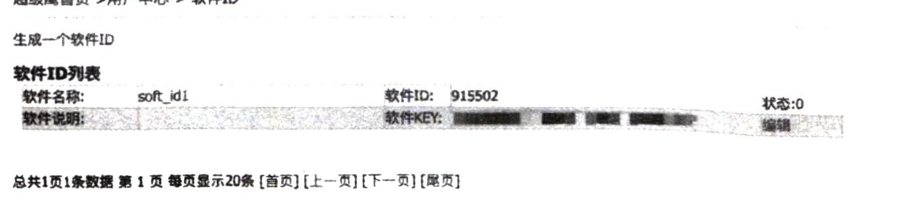
这个类还实现了两个方法,post_pic 方法用于上传验证码并获取识别结果,report_error 方法用于上报识别错误,识别错误时不扣题分,也就是不花钱。以上内容都准备好了,开始识别验证码,首先是图形验证码。
2. 图形验证码
本节中我们用图8-34所示的图形验证码为例进行讲解,该图片被保存为 captcha1.png 文件。
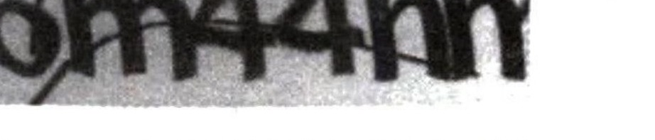
这是一个由英文字母和数字组合而成的验证码,一共六位,查阅价格文档 https://www.chaojiying.com/price.html,和这个验证码相符合的描述是“1-6位英文数字”,类型是“1006”,如图8-35所示。
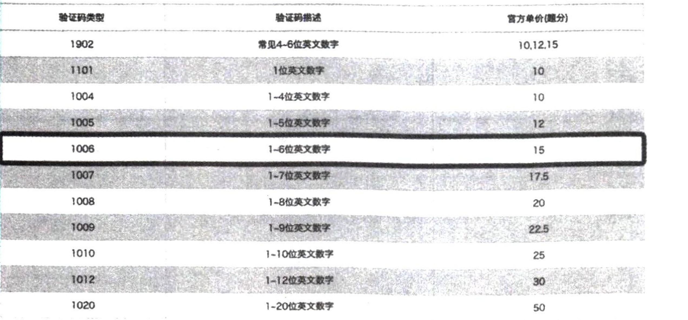
接着就可以编写实现代码:
from chaojiying import Chaojiying
"""
USERNAME, PASSWORD、SOFT_ID 需要更改为自己的用户名、密码和软件 ID
"""
USERNAME =
PASSWORD =
SOFT ID =
CAPTCHA KIND = '1006'
FILE NAME = 'captcha1.png'
client = Chaojiying(USERNAME, PASSWORD, SOFT_ID)
result = client.post_pic(open(FILE_NAME, 'rb').read(), CAPTCHA_KIND)
print(result)Here's the中文 OCR of D:\LearnPythonWebSpider\website\chapters\images\ch08\page-028.jpg as per your instructions:
这里首先利用 USERNAME、PASSWORD 和 SOFT_ID 三个信息初始化了一个 Chaojiying 对象,赋值为client 变量,然后调用 client 的 post_pic 方法上传了图 8-34 的二进制内容,这里把 post_pic 方法的第二个参数设置为 CAPTCHA_KIND,即 1006。返回结果如下:
{'err_no': 0, 'err_str': 'OK', 'pic_id': '1138416360949200010', 'pic_str': '6m44nn', 'md5':
'6f3f50e447fbb0b13abf828636096f94'}可以看到,返回结果中的 pic_str 字段出现了正确的识别结果,识别成功!
3. 点选验证码
点选验证码也是多种多样,12306 的验证码就是非常典型的一种点选验证码。本节中我们用
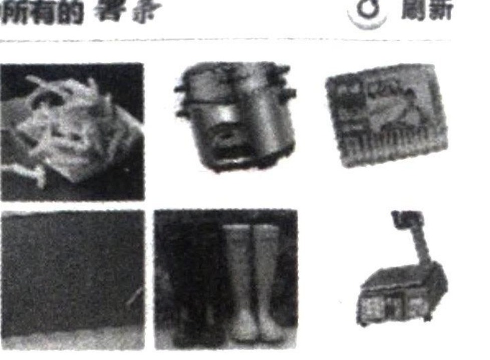
图 8-36 所示的点选验证码为例进行讲解,该图片
被保存为 captcha2.png 文件。查阅价格文档,比较符合这个验证码的描述是“坐标多选”,类型是“9004”,会返回 1~4 个坐标,如图 8-37 所示。
坐标类返回值 x.y 更多坐标以分瓶,原图左上角 0,0 以像率 px 为单位,x 是横轴,y 是纵轴9101 坐标选一,返回格式:xy 15 9102 点击两个相同的字,返回:x1.y1|x2.y2 22 9202 点击两个相同的动物或物品,返回:x1,y1|x2,y2 40 9103 坐标多选,返回3个坐标,如:x1.y1|x2,y2|x3,y3 20 9004 坐标多选,返回1-4个坐标,如x1,y1|x2,y2|x3,y3 25 9104 坐标选四,返回格式x1,y1|x2,y2|x3.y3|x4.y4 30 9005 坐标多选,返回3-5个坐标,如x1,y1|x2,y2|x3,y3 30 9008 坐标多选,返回5-8个坐标,如:x1.y1|x2,y2|x3,y3|x4.y4|x5.y5 40
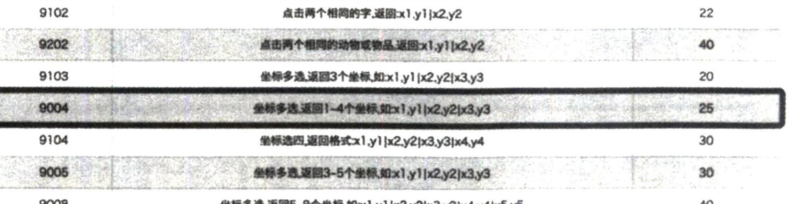
图 8-37 价格文档
将“图形验证码”代码中的 CAPTCHA_KIND 改成 9004, FILE_NAME 改成 captcha2.png,然后重新运行代码,得到的结果如下:
{'err_no': 0, 'err_str': 'OK', 'pic_id': '1138416440949200011', 'pic_str': '-|108,133|227,143', 'md5':
'526d232eb02afa7ed8319051a48ed7e9'}可以看到返回结果中的 pic_str 字段变成了 108,133|227,143,使用 OpenCV 技术在图 8-36 上标注出这个点:
import cv2
image = cv2.imread('captcha2.png')
image = cv2.circle(image, (108, 133), radius=10, color=(0, 0, 255), thickness=-1)
image = cv2.circle(image, (227, 143), radius=10, color=(0, 0, 255), thickness=-1)
cv2.imwrite('captcha2_label.png', image)运行结果如图 8-38 所示。
可以看到标注出来的正是第1张和第2张图片,没问题,验证成功!另外,还有一些验证码也属于点选类型,例如指定点击物品的颜色的验证码,如图8-39所示。指定文字点击顺序的验证码,如图8-40所示。要求按照语序点击文字的验证码,如图8-41所示。
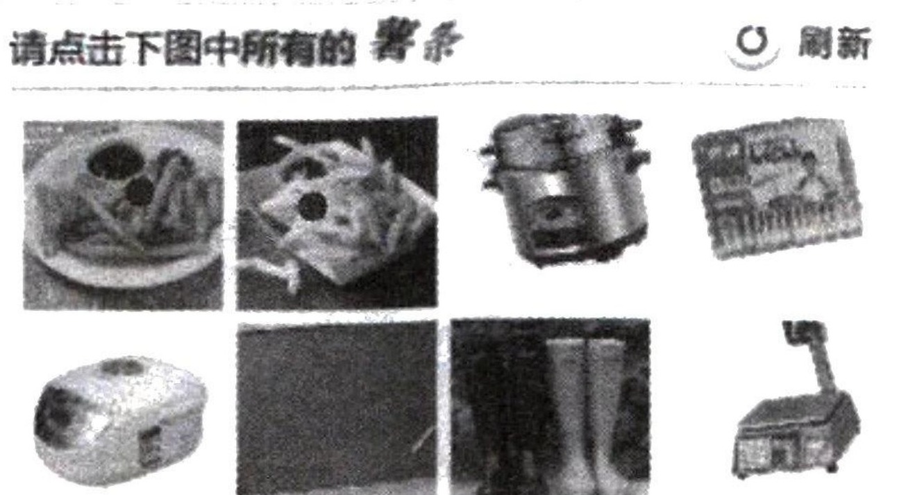
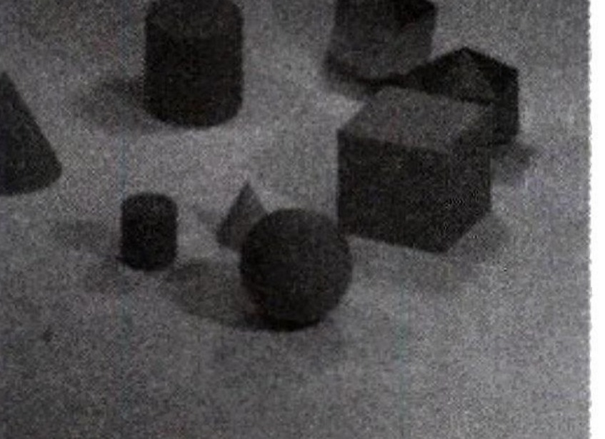
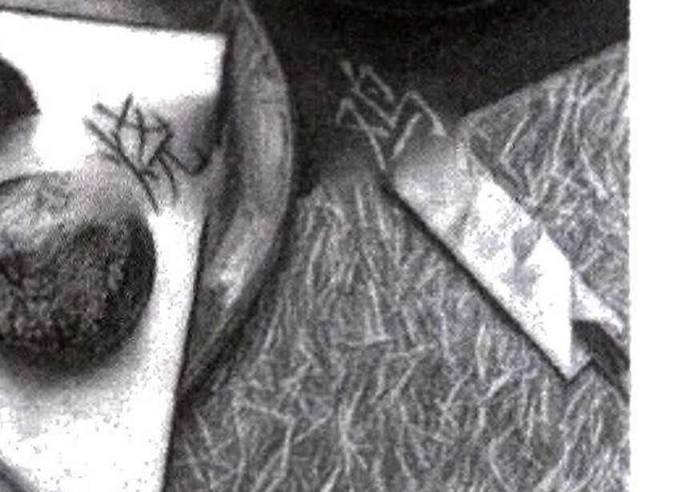
4. 滑动验证码
我们再来验证滑块验证码,这里以图8-42所示的图片为例进行讲解,这张图片被保存为 captcha3.png 文件。
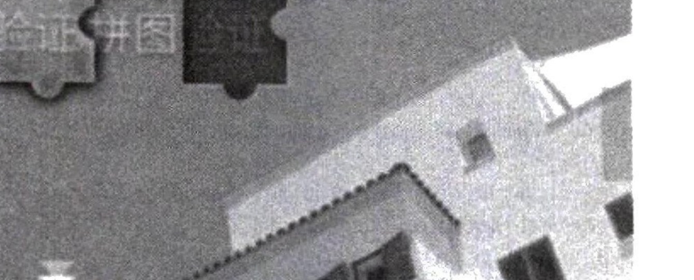
查阅价格文档,比较符合这个验证码的描述是“坐标选一”,类型是“9101”,如图8-43所示。
坐标类返回值 x.y更多坐标以分開,原图左上角0,0以像率px为单位,x是横轴,y是纵轴9101 坐标选一,返回格式xy 15 9102 点击两个相同的字,返回:x1,y1)x2,y2 22 9202 点击两个相同的动物或物品,返回x1,y1jx2,y2 40 9103 坐标多选,返回3个坐标、如:x1,y1|x2,y2)x3,y3 20 9004 坐标多选,返回1-4个坐标,如:x1,y1x2,y2)x3,y3 25 9104 坐标选四返图格式:x1,y1(x2,y2)x3,y3/x4.y4 30 9005 坐标多选,返回3-5个坐标,如:x1.y11x2,y2x3,y3 30 9008 坐标多选,返回5~8个坐标、如:x1,y1)x2,y2)x3,y3/x4.y4/x5.y5 40
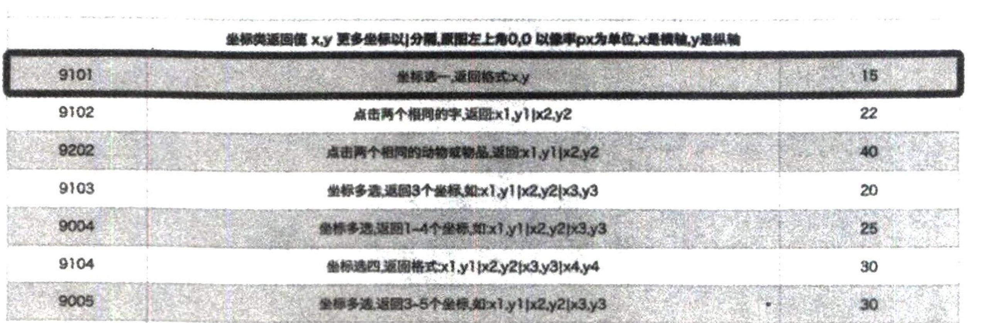
和“点选验证码”类似,将“图形验证码”代码中的CAPTCHA KIND 改成9101, FILE NAME 改成captcha3.png,然后重新运行代码,得到的结果如下:
{'err_no': 0, 'err_str': 'OK', 'pic_id': '9138416550949200012', 'pic_str': '231,85', 'md5':
'ae9cba3a8bbfcd9197551dda23aa0fd7'}可以看到返回结果中的pic_str 字段变成了231,85,我们用OpenCV 技术在图8-42上标注出这个点:
import cv2
image = cv2.imread('captcha3.png')
image = cv2.circle(image, (231, 85), radius=10, color=(0, 0, 255), thickness=-1)
cv2.imwrite('captcha3_label.png', image)返回的结果如图8-44所示。很遗憾,标注的点在缺口右侧的中间位置,这样不方便我们判断。造成这个结果的原因在于平台的背后是标注人员,标注人员拿到验证码图片后并不知道应该标注哪里,例如标在目标缺口的左侧还是右侧,在信息量不足的前提下,标注结果自然不一定如我们所愿。面对这种情况,一般应该怎么做?可以在图片上做一些处理,例如添加自定义的文字,提醒标注人员哪里是正确的位置。下面使用 OpenCV 技术在图 8-42 上加一行字“请点击目标缺口的左上角”:
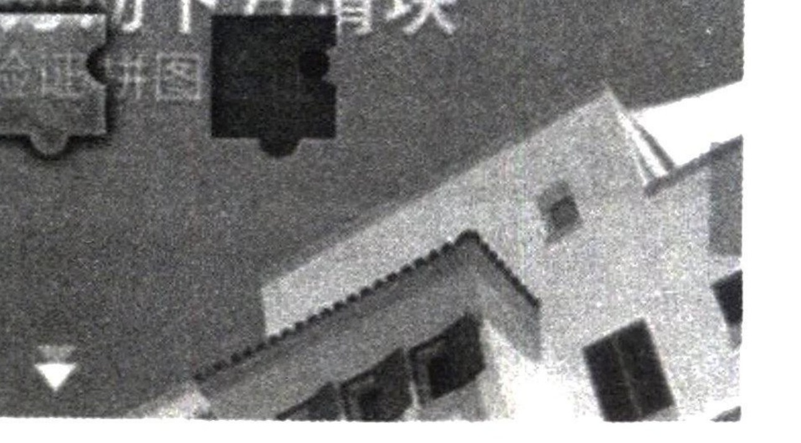
import cv2
from PIL import ImageFont, ImageDraw, Image
import numpy as np
import io
def cv2_add_text(image, text, left, top, textColor=(255, 0, 0), text_size=20):
image = Image.fromarray(cv2.cvtColor(image, cv2.COLOR_BGR2RGB))
draw = ImageDraw.Draw(image)
font = ImageFont.truetype('simsun.ttc', text_size, encoding="utf-8")
draw.text((left, top), text, textColor, font=font)
return cv2.cvtColor(np.asarray(image), cv2.COLOR_RGB2BGR)
image = cv2.imread(FILE_NAME)image = cv2_add_text(image,'请点击目标缺口的左上角',int(image.shape[1] / 10), int(image.shape[0] / 2), (255,0,0), 40)
client = Chaojiying (USERNAME, PASSWORD, SOFT_ID)
result = client.post_pic(io.BytesIO(cv2.imencode('.png', image)[1]).getvalue(), CAPTCHA_KIND)
print(result)这里我们定义了一个cv2_add_text方法,由于直接添加中文会产生乱码,所以需要借助 Pillow库,并且依赖一个中文字体文件。添加文字后,图片如图8-45所示。重新运行代码,得到的结果如下:
{'err_no': 0, 'err_str': 'OK', 'pic_id': '9138418320949200031', 'pic_str': '167,55', 'md5':
'12aef197b545bbf05ac28c7797e5ba46'}这时返回结果中的pic_str 字段变成了167,55,标注一下这个点,结果如图8-46所示。
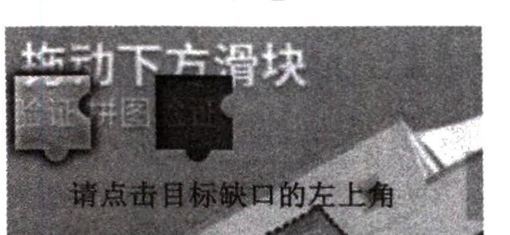
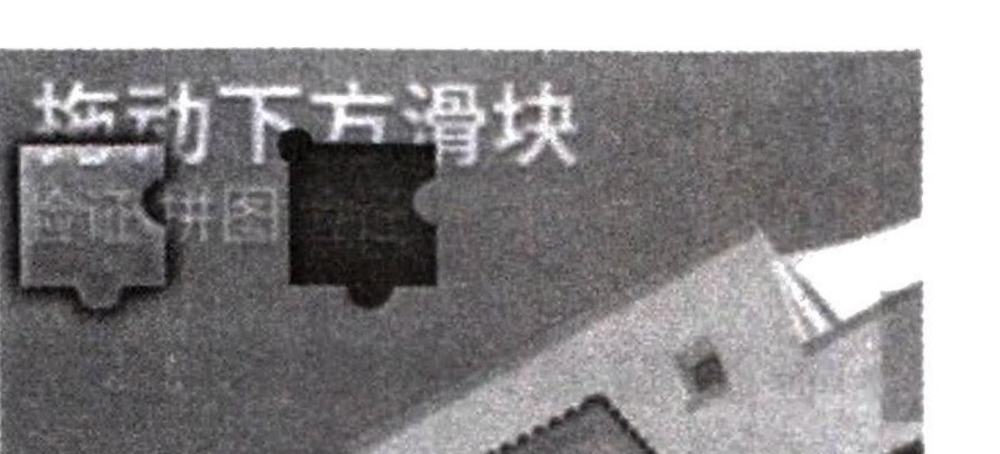
可以看到,这下标注的位置就正确了。所以在有必要的情况下,可以对图片稍做处理,以达到更好的标注效果。
5. 问答验证码
再看一种验证码——问答验证码,样例图片如图8-47所示,这张图片被保存为 captcha4.png。
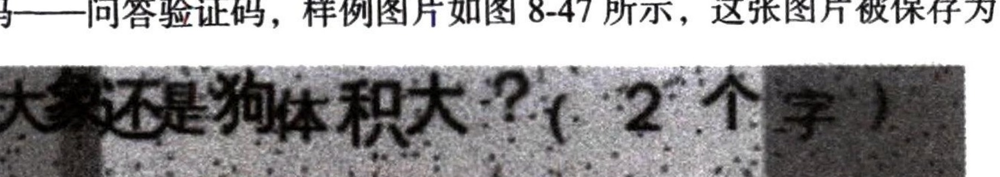
可以看到,验证码上有一个问题,并且在问题后的括号里有答案提示,问题中每个字的颜色、形状和字与字之间距离各不相同,背景中还有一些干扰线。对于这种验证码,如果想自动化完成识别,难度是比较大的。首先需要识别出图片上的文字,这对正确率有很高的要求。在能正确提取所有文字并且问题相对简单的前提下,可以通过用爬虫模拟一些网络搜索操作获得结果。如果问题稍微复杂一些或者在网络上搜索不到答案,可以通过一些自然语言处理技术或者知识库获得答案。但总的来说,通过纯技术手段识别问答验证码的难度还是比较高的。面对这样的验证码,比较合适的解决方案依然是打码平台,借助平台背后的人工力量完成识别。同样,查阅一下超级鹰平台对此类验证码的支持情况,如图8-48所示。问答类型验证码类型验证码描述官方单价(题分) 6001计算题
6003复杂计算题
6002选择题四选一(ABCD或1234)
6004问答题,智能回答题
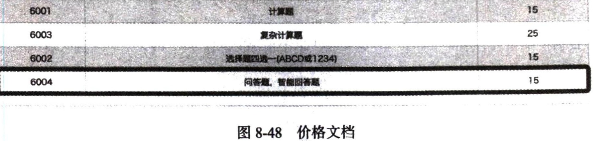
可以看到6004 类型是支持此类验证码的,我们把前面代码中的CAPTCHA_KIND 改成6004, FILE_NAME改成 captcha4.png,然后重新运行代码,得到的结果如下:
{'err_no': 0, 'err_str': 'OK', 'pic_id': '9138623590949200033', 'pic_str':'大象','md5':
'cc2a9466c15df990c559bb7df06eac55'}返回结果中的 pic_str字段是大象,回答正确。如此看来,打码平台着实非常强大。
6. 总结
本节中我们总结了利用打码平台识别各种验证码的方法,图形验证码、点选验证码、滑动验证码和问答验证码都不在话下,而且正确率也还不错,毕竟背后都是真实的人在操作,而且还有健壮的模型。本节代码见 https://github.com/Python3 WebSpider/CaptchaPlatform。
8.6 手机验证码的自动化处理
前面我们了解了一些验证码的识别流程,这些验证码有一个共同的特点,就是通常只在PC上即可识别通过,例如在PC上出现了一个图形验证码,那么在PC上直接识别就好了,所有流程都在PC上完成。但还有一种验证码和这些验证码不同,就是手机验证码,如果在PC上出现了一个手机验证码,需要先在PC上输入手机号,然后把短信验证码发到手机上,再在PC上输入收到的验证码,才能通过验证。遇到这种情况,如何才能将识别流程自动化呢?
1. 短信验证码的收发
通常而言,我们的自动化脚本运行在PC上,例如打开一个网页,然后模拟输入手机号,点击获取验证码,接下来就需要输入验证码了。我们可以非常容易地把前三个流程自动化,但验证码是发送到手机上了,怎么把它转给PC呢?自动化验证码的整个收发流程,可以这么实现——当手机接收到一条短信时,自动将这条短信转发至某处,例如转发至一台远程服务器或者直接发给PC,在PC上我们可以通过一些方法获取短信内容并提取验证码,再自动化填充到输入的地方即可。关键其实就是下面这两步:
监听手机接收到短信的事件;
将短信内容转发至指定的位置。这两步缺一不可,而且都需要在手机上完成。解决思路其实很简单,以Android手机为例,如果有Android 开发经验,这两个功能实现起来还是蛮简单的。注意这里我们仅仅简单介绍基本的思路,不会详细介绍具体的代码实现,感兴趣的话可以自行尝试。首先如何监听手机接收到短信呢?在Android开发中,分为三个必要环节。
注册读取短信的权限:在一个 Android App中,读取短信需要具备特定的权限,所以需要在Andriod App 的AndroidManifest.xml 文件中将读取短信的权限配置好,例如:
<uses-permission
android:name="android.permission.RECEIVE_SMS"></uses-permission>注册广播事件:Android有一个基本组件叫作BroadcastReceiver,是广播接收者的意思,我们可以用它监听来自系统的各种事件广播,例如系统电量不足的广播、系统来电的广播,那系统接收到短信的广播自然也不在话下。这类似于注册一个监听器来监听系统接收到短信的事件。这里我们在AndroidManifest.xml文件中注册一个 BroadcastReceiver,叫作 SmsReceiver:
<receiver android:name=".receive. SmsReceiver">
<intent-filter android: priority="999">
<action android:name="android.provider. Telephony.SMS_RECEIVED"/>
</intent-filter>
</receiver>实现短信广播的接收:这里就需要真正实现短信接收的逻辑了,只需要实现一个 SmsReceiver类,它继承 BroadcastReceiver类,然后实现其 onReceive 方法即可,其中 intent 参数里就包含了我们想要的短信内容,实现如下:
public class SmsReceiver extends BroadcastReceiver {
@Override
public void onReceive (Context context, Intent intent) {
Bundle bundle = intent.getExtras();
SmsMessage msg = null;
if (null != bundle) {
Object[] smsObj = (Object()) bundle.get("pdus");
for (Object object: smsObj) {
msg = SmsMessage.createFromPdu((byte[]) object);
Log.e("短信号码",""+ msg.getOriginatingAddress());
Log.e("短信内容", "" + msg.getDisplayMessageBody());
Log.e("短信时间”,
+ msg.getTimestampMillis());
}
}
}如此一来,我们便实现了短信的接收。收到短信之后,发送自然也很简单了,例如服务器提供一个API,请求该API即可实现数据的发送,Android的一些HTTP请求库就可以实现这个逻辑,例如利用 OkHttp 构造一个HTTP请求,这里就不再赘述了。不过总的来说,整个流程其实还需要花费一些开发成本,对于如此常用的功能,有没有现成的解决方案呢?自然是有的。我们完全可以借助一些开源实现,这样就没必要重复造轮子了。介绍一个开源软件 SmsForwarder,中文叫作短信转发器,其GitHub 地址为https://github.com/pppscn/SmsForwarder。它的基本架构如图8-49所示。
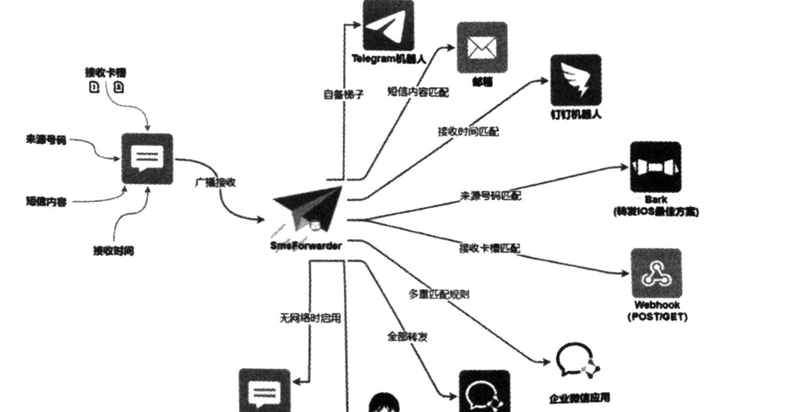
SmsForwarder 的架构非常清晰,它可以监听收到短信的事件,获取短信的来源号码、接收卡槽、短信内容、接收时间等,然后将这些内容通过一定的规则转发出去,支持转发到邮箱、企业微信群机器人、企业微信应用、Telegram 机器人和 Webhook等。例如可以配置这样的转发规则,如图 8-50所示。又如当手机号符合一定规则时就把获取的内容转发到QQ邮箱;当内容包含“报警”字样时就把获取的内容转发到阿里企业邮箱;当内容开头是“测试”时就把获取的内容发送给叫作 TSMS的Webhook。其中的QQ邮箱和阿里企业邮箱是我们已经配置好的发送方,都属于邮箱类型,TSMS 也是一种发送方,属于Webhook类型,发送方如图8-51所示。
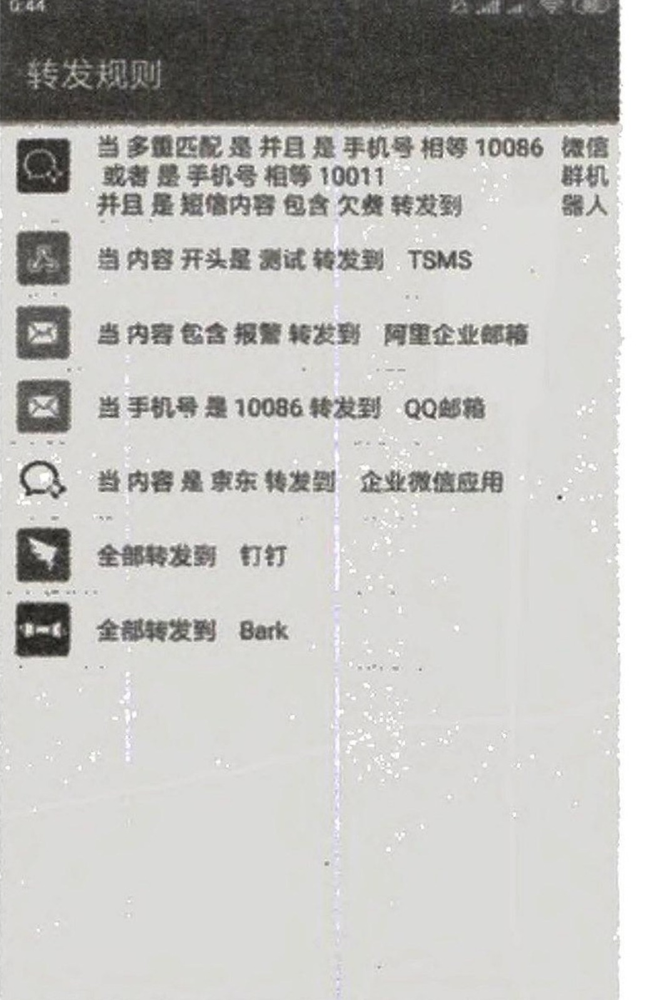
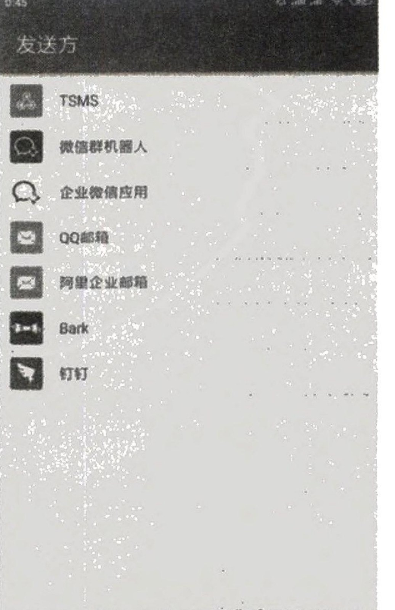
我们也可以点击图 8-51 下方的“添加发送方”按钮添加想要的发送方,可以选择对应的发送方类型,例如这里添加邮箱类型的发送方,App会弹出“设置邮箱”的提示框,如图8-52所示,我们可以设置 SMTP 端口、发件账号、登录密码/授权码等内容。同样,如果选择添加 Webhook 类型的发送方,App会弹出“设置 Webhook”提示框,如图8-53所示,我们可以选择请求方式(POST或GET),设置 WebServer 的URL,设置 Secret。设置转发规则的页面如图 8-54所示,支持正则匹配规则和卡槽匹配规则。这里可以设置匹配的卡槽、匹配的字段、匹配的模式,还可以填写正则表达式来设置匹配的值,图8-54中就设置了尾号是5的手机号,执行一定的发送操作,收到的短信会发送到钉钉这个发送方。
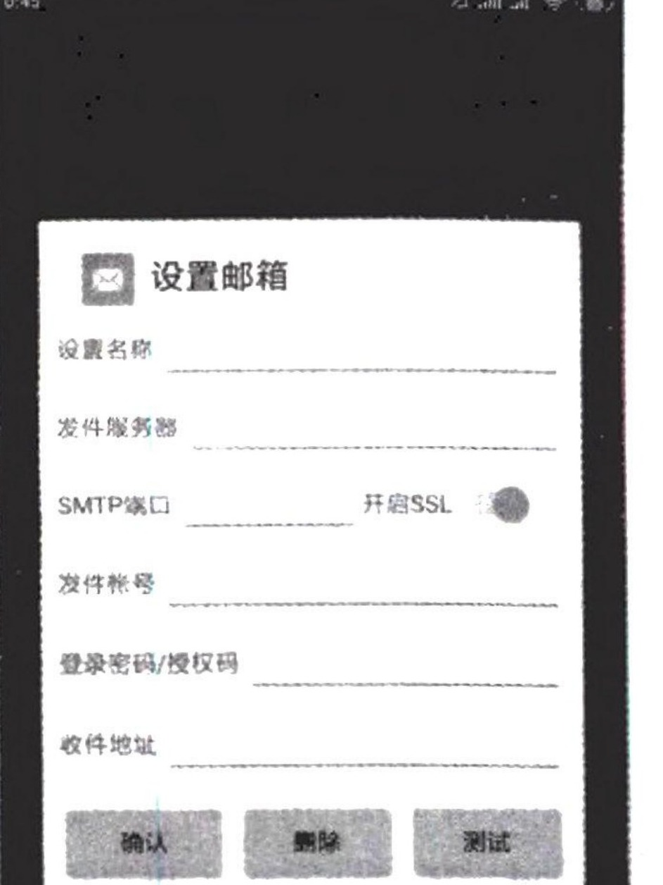
2. 实战演示
我们尝试使用 Flask 写一个 API, 实现如下:
from flask import Flask, request, jsonify
from loguru import logger
app = Flask(__name__)
@app.route('/sms', methods=['POST'])
def receive():
sms_content = request.form.get('content')
logger.debug(f'received {sms_content}')
# 解析内容并将其保存到db或mq
return jsonify(status='success')
if __name__ == '__main__':
app.run(debug=True)代码很简单,先设置了一个路由,接收 POST 请求,然后读取了 Request 表单的内容,其中 content就是短信内容的详情,之后将其打印出来。将上述代码保存为 server.py,然后运行:
python3 server.py运行结果如下:
Debug mode:on
Running on http://127.0.0.1:5000/ (Press CTRL+C to quit)
Restarting with stat
Debugger is active!
Debugger PIN: 269-657-055为了方便测试,可以用 Ngrok 工具将该服务暴露到公网:
ngrok http 5000运行之后,可以看到如下结果:Session Status Session Expires Update Version Region Web Interface Forwarding Forwarding Connections online 1 hour, 59 minutes update available (version 2.3.40, Ctrl-U to update) 2.3.35 United States (us)
http://127.0.0.1:4040
http://1259539cb974.ngrok.io -> http://localhost:5000
https://1259539cb974.ngrok.io -> http://localhost:5000ttl
opn
rt1：rt5 p50 p90 0.00 0.00 0.00 0.00
可以看到 Ngrok 为我们配置了一个公网地址,例如访问https://1259539cb974.ngrok.io 就相当于访问我们本地的 http://localhost:5000 服务,这样只需要在手机上配置这个地址就可以将数据发送到PC端了。接下来我们手机上打开 SmsForder,添加一个Webhook 类型的发送方,设置详情如图 8-55所示。其中,我们把 WebServer 的URL 直接设置成了刚才 Ngrok 提供的公网地址,注意要记得在 URL 的后面加上sms。接着我们添加一个转发规则,如图8-56月
这里我们设置了内容匹配规则,当匹配到以“测试”为开头的内容时,就将短信转发到 Webhook这个发送方,即发送到我们刚刚搭建的Flask 服务器上。添加完成后,我们可以尝试用另一台手机给当前运行此App的手机发送一个验证码信息,内容如下:
这时可以发现刚才的Flask 服务器接收到了这样的结果:测试验证码593722,一分钟有效。received +8617XXXXXXXX测试验证码593722,一分钟有效。SIM2 China Unicom
2021-03-27 18:47:54SM-G9860可以看到,发送给手机的验证码信息已经成功由手机发送到PC了,接着便可以对此信息进行解析和处理,然后存入数据库或者消息队列。爬虫端监听到消息队列或者数据库有改动即可将收到的验证码填写到爬取的目标网站上并进行一些模拟登录操作,这个过程就不再赘述了。
3. 批量收发
以上介绍的内容针对的是只有一部手机的情况,如果有大量手机和手机卡,则可以实现手机的群控处理,例如统一安装短信接收软件、统一配置相同的转发规则,从而接收和处理大量手机号的验证码。图8-57所示的就是一个群控系统。
4. 卡池、猫池
除了上面的方法,当然还有更专业的解决方案,例如用专业的手机卡池、猫池,配以专业的软件设备实现短信监听。例如图8-58中的设备支持插128张SIM卡,这样可以同时监听128个手机号的验证码。具体的技术这里不再阐述,可以自行查询相关的设备供应商了解详情。
5. 接码平台
卡池、猫池的解决方案成本还是比较高的,而且这些方案其实已经不限于简单地接收短信
验证码了,就像手机群控系统一般会做手机群控爬虫,卡池也可以用来做4G/5G蜂窝代理,仅仅做短信收发当然也可以,但未免有些浪费了。如果不想耗费过多成本,想实现短信验证码的自动化,还有一种方案就是接码平台,其基本思路如下。
平台会维护大量手机号,并可能开放一些 API 或者提供网页供我们调用来获取手机号和查看短信的内容。
我们调用API 或者爬取网页获取手机号,然后在对应的网站输入该手机号来获取验证码。
通过调用API 或者爬取网页获取对应手机号的短信内容,并交由爬虫处理。由于对接码平台的管控比较严格,因此接码平台随时可能会不可用,请自行搜集对应的平台使用。
6. 总结
本节通过一个实战案例介绍了手机验证码的自动化处理流程,同时介绍了现在业界广泛采用的一些用于收发验证码的工具。随着技术的发展,各种新的工具和技术会不断出现,合适又强大的工具会让我们的爬虫开发过程如虎添翼。